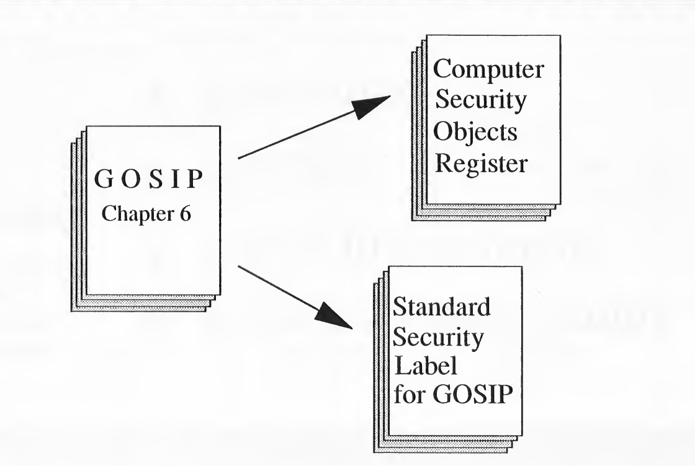
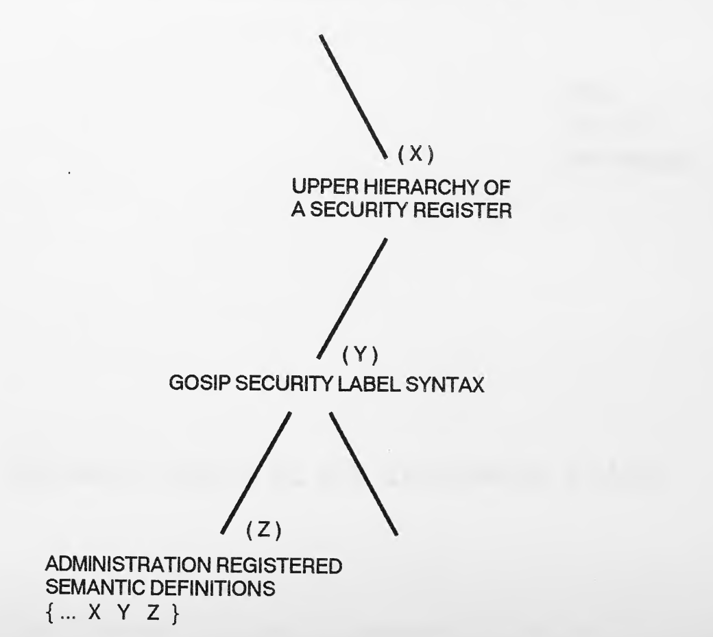

NIST IR 4614 日本語訳
英語タイトル : Standard Security Label for GOSIP: an Invitational Workshop日本語タイトル : GOSIP のための標準セキュリティラベル：招待制ワークショップ
公開日 : 1991-06-01
原文URL : https://csrc.nist.gov/pubs/ir/4614/final
原本 PDF : https://doi.org/10.6028/NIST.IR.4614
訳文 : 有志による非公式の日本語訳（AI による翻訳とレビュー）。全 559 段落のうち 549 段落を翻訳済み（原文取得日 : 2026-10-31）
[要約] NIST IR 4614 は、GOSIP のための標準セキュリティラベルに関する招待制ワークショップの報告書で、Noel Nazario が議長を務めました。1991 年 4 月 9 日と 10 日に、NIST のプロトコルセキュリティグループがセキュリティラベルに関する第 2 回ワークショップを開催しました。米国政府、産業界、カナダ政府から 40 名の代表が 2 日間集まり、NIST が提案した、米国政府開放型システム間相互接続プロファイル（GOSIP）のための標準セキュリティラベルについて議論しました。提案されたラベルに関連して、セキュリティポリシーとセキュリティオブジェクトの登録に関する論点も議論され、2 日間に共有された情報とグループの勧告が本報告書に記録されています。
Standard Security Label for GOSIP An Invitational Workshop
GOSIP のための標準セキュリティラベル 招待制ワークショップ
Noel Nazario
Chairman
Noel Nazario
議長
U.S. DEPARTMENT OF COMMERCE
National Institute of Standards and Technology
Computer Systems Laboratory
Gaithersburg, MD 20899
米国商務省
国立標準技術研究所
コンピューターシステム研究所
Gaithersburg, MD 20899
U.S. DEPARTMENT OF COMMERCE
Robert A. Mosbacher, Secretary
NATIONAL INSTITUTE OF STANDARDS AND TECHNOLOGY
John W. Lyons, Director
米国商務省
Robert A. Mosbacher 長官
国立標準技術研究所
John W. Lyons、所長
Standard Security Label for GOSIP An Invitational Workshop
GOSIP のための標準セキュリティラベル 招待制ワークショップ
Noel Nazario
Chairman
Noel Nazario
議長
U.S. DEPARTMENT OF COMMERCE
National Institute of Standards and Technology
Computer Systems Laboratory
Gaithersburg, MD 20899
米国商務省
国立標準技術研究所
コンピューターシステム研究所
Gaithersburg, MD 20899
June 1991
1991 年 6 月
U.S. DEPARTMENT OF COMMERCE
Robert A. Mosbacher, Secretary
NATIONAL INSTITUTE OF STANDARDS AND TECHNOLOGY
John W. Lyons, Director
米国商務省
Robert A. Mosbacher 長官
国立標準技術研究所
John W. Lyons、所長
Table of Contents
目次
Workshop Output
ワークショップの成果
"CIPSO: Commercial Internet Protocol Security Option" (Presentation Slides), Ronald Sharp (AT&T)
"CIPSO: Commercial Internet Protocol Security Option"（発表スライド）、Ronald Sharp（AT&T）
"Commercial IP Security Option" (Position Paper), Ronald Sharp (AT&T)
"Commercial IP Security Option"（意見書）、Ronald Sharp（AT&T）
Comments on the draft FIPS - "Standard Security Label for the Government Open Systems Interconnection Profile" (Position Paper), Russell Housley, Sammy Migues (Xerox Special Information Systems)
FIPS 案 "Standard Security Label for the Government Open Systems Interconnection Profile" へのコメント（意見書）、Russell Housley、Sammy Migues（Xerox Special Information Systems）
"The Multipolicy Machine - A New Paradigm for Multilevel Security Systems" (Position Paper), Hilary Hosmer (Data Security, Inc.)
"The Multipolicy Machine - A New Paradigm for Multilevel Security Systems"（意見書）、Hilary Hosmer（Data Security, Inc.）
"Modelling Security Policy and Labelling Unclassified but Sensitive Information - A Canadian Perspective" (Position Paper), D.S. Crawford (Canadian Department of National Defence)
"Modelling Security Policy and Labelling Unclassified but Sensitive Information - A Canadian Perspective"（意見書）、D.S. Crawford（Canadian Department of National Defence）
"The Amdahl Approach to Security Labels" (Position Paper), Jon Graff, Ph.D.
"The Amdahl Approach to Security Labels"（意見書）、Jon Graff, Ph.D.
Abstract
要旨
On April 9 and 10, 1991 the Protocol Security Group at NIST held its Second Workshop on Security Labels. Forty representatives from the U.S. Government, Industry, and the Canadian Government gathered for two days to discuss a NIST proposed Standard Security Label for the U.S. Government Open Systems Interconnection Profile. Issues on security policy and security object registration were also discussed in reference to the proposed label. The information shared during the two days of discussion and the recommendations of the group are documented in these proceedings.
1991 年 4 月 9 日と 10 日に、NIST のプロトコルセキュリティグループは、セキュリティラベルに関する第 2 回ワークショップを開催しました。米国政府、産業界、カナダ政府から 40 人の代表が 2 日間にわたって集まり、NIST が提案した米国政府開放型システム間相互接続プロファイル（Government Open Systems Interconnection Profile）向けの標準セキュリティラベルについて議論しました。提案されたラベルに関連して、セキュリティポリシーとセキュリティオブジェクト登録に関する課題も議論されました。2 日間の議論で共有された情報と、グループの勧告は、この会議録に記録されています。
Key Words: Government Open Systems Interconnection Profile (GOSIP); Computer Security Objects Register; Open Systems Interconnection; security labels
キーワード: Government Open Systems Interconnection Profile (GOSIP); Computer Security Objects Register; Open Systems Interconnection; security labels
Papers are contributions of the authors and do not necessarily represent NIST views.
論文は著者による寄稿であり、必ずしも NIST の見解を表すものではありません。
Workshop Report
ワークショップ報告
Robert Rosenthal, Manager of the Protocol Security Group at NIST, welcomed the attendees. He described the role of this workshop in NIST's effort to incorporate security mechanisms into the U.S. Government Open Systems Interconnection Profile. Mr. Rosenthal envisions a set of Government OSI Security Profiles that will be pointed to by the Federal Information Processing Standard (FIPS) 146, GOSIP. The first set of profiles would include the following topics:
NIST のプロトコルセキュリティグループのマネージャーである Robert Rosenthal が、参加者を歓迎しました。同氏は、NIST が米国政府開放型システム間相互接続プロファイルにセキュリティ機構を組み込む取り組みの中での、このワークショップの役割を説明しました。Rosenthal 氏は、連邦情報処理標準（FIPS）146（GOSIP）が参照する一連の政府 OSI セキュリティプロファイルを構想しています。最初のプロファイル群には、次のトピックが含まれる予定です。
•Key Management for Public Key Cryptography
•公開鍵暗号のための鍵管理
•Security Protocol for Layer 4 (SP4)
•レイヤー 4 のセキュリティプロトコル（SP4）
•Security Labels
•セキュリティラベル
•Cryptographic Modules
•暗号モジュール
•Register for Uniquely Named Managed Security Objects
•一意に命名された管理対象セキュリティオブジェクトの登録簿
Mr. Rosenthal introduced Noel Nazario (NIST), Workshop Chair. Mr. Nazario reviewed the agenda and asked the attendees to introduce themselves. Appendix A contains a list of attendees.
Rosenthal 氏は、ワークショップの議長である Noel Nazario（NIST）を紹介しました。Nazario 氏は議題を確認し、参加者に自己紹介を求めました。参加者の一覧は付録 A にあります。
Larry Keys (NIST), will be the Registrar for NIST's Computer Security Objects Register (CSOR). The CSOR is being organized using ANSI/ISO guidelines for object registration. Mr. Keys gave a status report on the work done so far in setting up this service and outlined the basics of the registration procedure.
Larry Keys（NIST）は、NIST の Computer Security Objects Register（CSOR）の登録官を務める予定です。CSOR は、オブジェクト登録に関する ANSI/ISO のガイドラインを用いて編成されています。Keys 氏は、このサービスの立ち上げでこれまでに行った作業の状況を報告し、登録手続の基本を概説しました。
George Rogers (IC Staff) asked whether this register could or would register classified objects. Dr. Dennis Branstad (NIST) answered that NIST has no authority over classified information. Branstad added that since the register deals with a hierarchical structure the "classified side" could be treated as a branch of the same tree structure. Mr. Rogers expressed concern with having more than one register and recommended avoiding this situation if possible.
George Rogers（IC Staff）は、このレジスターが機密のオブジェクトを登録できるか、または登録するのかを質問しました。Dr. Dennis Branstad（NIST）は、NIST には機密情報に対する権限がないと答えました。Branstad 氏は、このレジスターは階層構造を扱うため、「機密側」を同じ木構造の 1 つの枝として扱うことができると付け加えました。Rogers 氏は、複数のレジスターが存在することへの懸念を示し、可能であればこの状況を避けることを勧めました。
Dr. Stuart Katzke (NIST) spoke about the relationship between security labels and data categorization. Data is categorized according to the protection required thus reflecting the risks involved in their loss and misuse. Some issues in this area are:
Dr. Stuart Katzke（NIST）は、セキュリティラベルとデータ分類の関係について話しました。データは必要な保護に従って分類され、その喪失や不正使用に伴うリスクが反映されます。この分野の課題には、次のものがあります。
Types of categories: Confidentiality, Integrity, Availability
分類の種類: 機密性、完全性、可用性
Structural relationship between categories: Hierarchical (e.g., DoD Model for Confidentiality), Lattice, Independent.
分類間の構造的な関係: 階層型（例: 機密性に関する国防総省モデル）、束（Lattice）型、独立型。
Independence between data categorization structure and access control models such as Access Control Lists, Bell and LaPadula/Clearances, Capabilities, Chinese Wall, and Biba. Interpretation of categories as they relate to protection objectives. (e.g., No consensus on an interpretation of hierarchical integrity categories.)
データ分類の構造と、アクセス制御リスト、Bell and LaPadula／クリアランス、ケイパビリティ、Chinese Wall、Biba などのアクセス制御モデルとの独立性。保護目標に関連する分類の解釈。（例: 階層的な完全性の分類の解釈については合意がありません。）
Implementation and enforcement of data categorization policy.
データ分類ポリシーの実装と実施。
•Protection Objectives vs Mechanisms
•保護目標と機構の対比
•Consistent interpretation of protection objectives by the organization receiving the data.
•データを受け取る組織による、保護目標の一貫した解釈。
•Variation of protection objectives based upon organization receiving the data. (e.g., Modification may be done by agency X while only read access is permitted to agency Y)
•データを受け取る組織に応じた保護目標の変化。（例: 機関 X は変更を行えますが、機関 Y には読み取りアクセスのみが許可されます。）
Ancestry: How much needs to known about the data's generation, change, and disposition ancestry to protect them properly. What are the protection requirements on this ancestry information.
来歴（Ancestry）: データを適切に保護するために、データの生成、変更、処分に関する来歴について、どの程度知る必要があるでしょうか。この来歴情報に対する保護要件は何でしょうか。
Dr. Katzke gave a historical perspective of efforts made in addressing the data categorization problem. Some important events were:
Katzke 氏は、データ分類の問題に取り組むためのこれまでの取り組みを、歴史的な観点から説明しました。重要な出来事には、次のものがありました。
Work was initiated at NIST in the early 70s by Branstad and Katzke.
1970 年代初めに、Branstad 氏と Katzke 氏により、NIST で作業が開始されました。
Subcommittee on Automated Information Systems Security/National Telecommunications and Information System Security Committee (SAISS/NTISSC): Their work resulted in coining the term "Sensitive Unclassified".
Subcommittee on Automated Information Systems Security/National Telecommunications and Information System Security Committee（SAISS/NTISSC）: その作業から、「Sensitive Unclassified」という用語が生まれました。
Computer Security Act: Adopted the term "Sensitive Unclassified". The act gave no guidance for determining the degree of sensitivity.
コンピューターセキュリティ法（Computer Security Act）: 「Sensitive Unclassified」という用語を採用しました。同法は、機微性の程度を判断するための指針を示していませんでした。
Computer and Telecommunications Security Council (CTSC): Warren Schmitt presented to the CTSC his categorization model. This model consists of three levels (Low, Medium, High) along three axes (Confidentiality, Integrity, Availability). The resulting matrix is then mapped to the appropriate mechanisms.
Computer and Telecommunications Security Council（CTSC）: Warren Schmitt が、自身の分類モデルを CTSC に発表しました。このモデルは、3 つの軸（機密性、完全性、可用性）に沿った 3 つの水準（低、中、高）で構成されます。得られた行列は、適切な機構に対応付けられます。
NIST's First Invitational Workshop on Security Labels for Open Systems was held on May 30 and 31, 1990. The proceedings were published as NISTIR 4362.
NIST の第 1 回「開放型システムのためのセキュリティラベル」招待制ワークショップは、1990 年 5 月 30 日と 31 日に開催されました。その会議録は NISTIR 4362 として刊行されました。
Computer Systems Security and Privacy Advisory Board: Presentations on Data Categorization Requirements and Approach based on initiatives by:
Computer Systems Security and Privacy Advisory Board: 次の組織の取り組みに基づく、データ分類の要件と手法についての発表。
•Canadian Government
•カナダ政府
•Drug Enforcement Community
•麻薬取締りの関係者
•Specific Federal Agencies (e.g. Census Bureau, IRS, Matching Programs)
•特定の連邦機関（例: 国勢調査局、内国歳入庁、照合プログラム）
•Federal Agencies under Bilateral Agreements
•二国間協定に基づく連邦機関
So far all discussions on the subject have lead to "black holes" (i.e., No general agreement has been achieved). Potential actions that could result in uniform data categories for the federal government include:
これまでこの主題について議論しても、すべて「ブラックホール」に行き着いています（つまり、全般的な合意は得られていません）。連邦政府で統一的なデータ分類を実現しうる措置には、次のものがあります。
•Office of Management and Budget (OMB) policy decisions
•行政管理予算局（OMB）の政策決定
•Congressional legislation
•議会の立法
•Selection of categories within major Department of Defense efforts such as the Corporate Information Management (CIM) and/or Computer-aided Acquisition and Logistics Support (CALS)
•Corporate Information Management（CIM）や Computer-aided Acquisition and Logistics Support（CALS）などの国防総省の主要な取り組みの中での、分類の選択
Dr. Katzke concluded his presentation by recommending that this workshop focus on the less controversial part of the problem (i.e., Agreeing on a label format).
Katzke 氏は、このワークショップでは、問題の中でも議論の少ない部分（つまり、ラベルの形式についての合意）に焦点を当てることを勧めて、発表を締めくくりました。
Noel Nazario (NIST) summarized the developments in the labeling effort since the previous workshop. These include:
Noel Nazario（NIST）は、前回のワークショップ以降のラベル付けの取り組みの進展を要約しました。これには、次のものが含まれます。
The publication of the proceedings of the May 1990 labeling workshop as NISTIR 4362, "Security Labels for Open Systems an Invitational Workshop."
1990 年 5 月のラベル付けワークショップの会議録が、NISTIR 4362 "Security Labels for Open Systems an Invitational Workshop" として刊行されたこと。
A panel session at the 13th National Computer Security Conference chaired by Dr. Dennis Branstad (NIST). This session included the participation of Russ Housley (Xerox), Warren Schmitt (Sears Technology Services), and Noel Nazario (NIST).
Dr. Dennis Branstad（NIST）が議長を務めた、第 13 回 National Computer Security Conference でのパネルセッション。このセッションには、Russ Housley（Xerox）、Warren Schmitt（Sears Technology Services）、Noel Nazario（NIST）が参加しました。
The release for comment of an initial proposal for a security label based on the output of the first labeling workshop.
第 1 回ラベル付けワークショップの成果に基づく、セキュリティラベルの最初の提案が、意見募集のために公開されたこと。
Interaction with the Trusted Systems Interoperability Group (TSIG), developers of the Commercial Internet Protocol Security Option (CIPSO).
Commercial Internet Protocol Security Option（CIPSO）の開発者である Trusted Systems Interoperability Group（TSIG）との連携。
Presentation on NIST's GOSIP labeling effort at the Workshop on Database Security Labeling for Civilian Agencies in Tucson, Arizona.
アリゾナ州 Tucson で開催された、民間機関向けデータベースセキュリティラベル付けに関するワークショップでの、NIST の GOSIP ラベル付けの取り組みについての発表。
The decision by NIST to establish and maintain a Computer Security Objects Register (CSOR).
NIST が Computer Security Objects Register（CSOR）を設立し、維持することを決定したこと。
The release for comment of the initial draft of a Federal Information Processing Standard (FIPS) specifying a Standard Security Label for the Government Open Systems Interconnection Profile.
政府開放型システム間相互接続プロファイル向けの標準セキュリティラベルを規定する、連邦情報処理標準（FIPS）の最初の草案が、意見募集のために公開されたこと。
Ron Sharp (AT&T) represented the Trusted Systems Interoperability Group (TSIG). Mr. Sharp described the TSIG as a very informal group of implementors interested in developing interoperable trusted distributed systems. The TSIG is engaged in projects such as CIPSO, Trusted X-Windows, Trusted Network File Systems (NFS), Trusted Session Management, and Trusted Sockets. The current focus for TSIG members is the TCP/IP communications protocol but the door remains open for a transition to OSI as markets emerge. In developing CIPSO the TSIG adopted and modified original work done by Sun Microsystems and Hewlett-Packard. The group has spawned an Internet Working Group whose purpose is to present CIPSO as an Internet Request for Comment (RFC). Mr. Sharp enumerated reasons for the development of CIPSO, its main features, and presented the label format. His presentation slides and the current version of the CIPSO specification appears on page 55 of this document.
Ron Sharp（AT&T）は、Trusted Systems Interoperability Group（TSIG）を代表しました。Sharp 氏は、TSIG を、相互運用可能な信頼できる分散システムの開発に関心を持つ実装者による、非常に非公式なグループだと説明しました。TSIG は、CIPSO、Trusted X-Windows、Trusted Network File Systems（NFS）、Trusted Session Management、Trusted Sockets などのプロジェクトに取り組んでいます。TSIG メンバーの現在の焦点は TCP/IP 通信プロトコルですが、市場が形成されるにつれて OSI に移行する可能性も残されています。CIPSO の開発にあたり、TSIG は Sun Microsystems と Hewlett-Packard が行った元の作業を採用し、修正しました。このグループからは、CIPSO を Internet Request for Comment（RFC）として提示することを目的とする Internet Working Group が生まれています。Sharp 氏は、CIPSO の開発理由と主な特徴を列挙し、ラベル形式を提示しました。同氏の発表スライドと CIPSO 仕様の現行版は、この文書の55ページに掲載されています。
Noel Nazario presented the Standard Security Label (SSL). The specification for this label is given by the initial draft of a FIPS, called Standard Security Label for the Government Open Systems Interconnection Profile. This document provides the format of a security label that may be used at different layers of the OSI architecture. The semantics of the label will be given by a Computer Security Objects Register (CSOR). This future FIPS will be referenced by the U. S. Government Open Systems Interconnection Profile (GOSIP) when describing labeling options for various protocols.
Noel Nazario は、標準セキュリティラベル（SSL）を発表しました。このラベルの仕様は、Standard Security Label for the Government Open Systems Interconnection Profile という FIPS の最初の草案で示されています。この文書は、OSI アーキテクチャのさまざまな層で使用できるセキュリティラベルの形式を提供します。ラベルの意味論は、Computer Security Objects Register（CSOR）によって与えられます。この将来の FIPS は、さまざまなプロトコルのラベル付けの選択肢を記述する際に、米国政府開放型システム間相互接続プロファイル（GOSIP）から参照されます。
The SSL begins with a Security Label Indicator and a length field indicating the length of the Security Information that follows. The Security Information field includes a Register Index Code (RIC), a Security Level field, and Security Tags. The RIC identifies the semantic rules for the label as registered in the CSOR. There are four tag types, one of which indicates the end of the label. The other three tag types may be used to carry additional security information. The presentation slides on page 21 of this report illustrate the general format of the label and the four tag types. A full description appears in the draft FIPS text also included.
SSL は、セキュリティラベル識別子と、それに続くセキュリティ情報の長さを示す長さフィールドで始まります。セキュリティ情報フィールドには、レジスター索引コード（RIC）、セキュリティレベルフィールド、セキュリティタグが含まれます。RIC は、CSOR に登録されたラベルの意味規則を識別します。タグの種類は 4 つあり、そのうち 1 つはラベルの終端を示します。残りの 3 つのタグの種類は、追加のセキュリティ情報を運ぶために使うことができます。この報告書の 21 ページの発表スライドは、ラベルの一般的な形式と 4 つのタグの種類を示しています。完全な説明は、同じく掲載されている FIPS 草案の本文にあります。
Mr. Nazario compared the label option currently specified by GOSIP for the Connectionless Network Protocol (CLNP) to the SSL. The GOSIP CLNP security option is actually two separate options defined by two different authorities or activities while the SSL can provide the same information in a label defined by a single authority. The Classification Protection Level in the Basic Security Option (BSO) is analogous to the Security Level field in the SSL. The equivalent of the Additional Security Information in the Extended Security Option (ESO) can be provided by the three information-carrying tag types in the SSL.
Nazario 氏は、現在 GOSIP がコネクションレスネットワークプロトコル（CLNP）向けに規定しているラベルのオプションを、SSL と比較しました。GOSIP の CLNP セキュリティオプションは、実際には 2 つの異なる機関または活動によって定義された 2 つの別個のオプションですが、SSL は、単一の機関が定義するラベルで同じ情報を提供できます。基本セキュリティオプション（BSO）の分類保護レベル（Classification Protection Level）は、SSL のセキュリティレベルフィールドに相当します。拡張セキュリティオプション（ESO）の追加セキュリティ情報（Additional Security Information）に相当するものは、SSL の 3 つの情報搬送用タグ型で提供できます。
Mr. Nazario also compared the SSL to the Commercial CIPSO. There are two main distinctions between the CIPSO label and the SSL. The Domain of Interpretation field that identifies the defining authority for the CIPSO label is a four octet fixed length field while the RIC, which points to the semantics of the label as registered in the CSOR for the SSL, is a variable length field. The second difference is that every CIPSO tag has a security level field while there is only one security level field in the SSL.
Nazario 氏は、SSL を商用の CIPSO とも比較しました。CIPSO のラベルと SSL の間には、2 つの主な違いがあります。CIPSO のラベルの定義機関を識別する解釈ドメイン（Domain of Interpretation）フィールドは 4 オクテットの固定長フィールドですが、SSL では CSOR に登録されたラベルの意味論を指す RIC が可変長フィールドです。2 つ目の違いは、CIPSO ではすべてのタグにセキュリティレベルフィールドがあるのに対し、SSL ではセキュリティレベルフィールドが 1 つしかないことです。
Noel Nazario also presented proposed modifications to the text in the security chapter (6) of the U.S. Government Open Systems Interconnection Profile (GOSIP). Chapter 6 of GOSIP currently contains the specification for a security option for the Connectionless Network Protocol (CLNP). This chapter is also a placeholder for future specifications. Changes include a new paragraph structure to accommodate a NIST Security Information option for CLNP and placeholders for security parameters at other layers. Only a label parameter is currently defined within the NIST Security Information option. A pointer to the SSL document provides the format specification for this label parameter. The new text also points to the Computer Security Objects Register (CSOR) to provide the semantics for the label. The new CLNP Security Parameter allows the use of either the existent BSO/ESO label or the NIST Security Information. The BSO/ESO was kept for backwards compatibility.
Noel Nazario は、米国政府開放型システム間相互接続プロファイル（GOSIP）のセキュリティの章（第 6 章）の本文に対する、修正案も発表しました。GOSIP の第 6 章には現在、コネクションレスネットワークプロトコル（CLNP）向けのセキュリティオプションの仕様が含まれています。この章は、将来の仕様のための場所としても確保されています。変更点には、CLNP 向けの NIST セキュリティ情報オプションに対応するための新しい段落構成と、他の層のセキュリティパラメーターのための場所の確保が含まれます。NIST セキュリティ情報オプションの中で現在定義されているのは、ラベルパラメーターだけです。SSL 文書へのポインターが、このラベルパラメーターの形式仕様を提供します。新しい本文は、ラベルの意味論を提供する Computer Security Objects Register（CSOR）も指しています。新しい CLNP セキュリティパラメーターでは、既存の BSO/ESO ラベルか NIST セキュリティ情報のいずれかを使用できます。BSO/ESO は、後方互換性のために残されました。
Wayne Jansen (NIST) presented an overview of Security Labels at the Transport Layer. His discussion dealt with the Transport Layer Security Protocol (TLSP). The TLSP, currently under development within ISO, is being balloted for CD (Committee Draft) status. Mr. Jansen compared the SSL and the TLSP label formats and their respective views on label registration. The presentation suggested a compromise format for the alignment of both labels and a methodology for creating label definitions independent of encoding concerns using ASN.1.
Wayne Jansen（NIST）は、トランスポート層のセキュリティラベルの概要を発表しました。同氏の議論は、トランスポート層セキュリティプロトコル（TLSP）を扱うものでした。TLSP は現在 ISO で策定中で、CD（Committee Draft）の段階に向けた投票が行われています。Jansen 氏は、SSL と TLSP のラベル形式、およびそれぞれのラベル登録についての見解を比較しました。発表では、両方のラベルを整合させるための折衷的な形式と、ASN.1 を用いて符号化の問題と独立にラベル定義を作成する方法論が提案されました。
Russ Housley (Xerox) presented comments on the draft Standard Security Label document. The proposed label may be applicable to several protocols within the OSI architecture. However, an ASN.1 definition would be necessary for use at layer 7. The IEEE 802.2 working group is currently working on a layer 2 label, it would be appropriate to present the SSL to that group. Mr. Housley added that there should be a reference in the SSL text that indicates what document provides usage rules for this label. The full text of the Xerox comments appear later in this document.
Russ Housley（Xerox）は、標準セキュリティラベル文書の草案についてのコメントを発表しました。提案されたラベルは、OSI アーキテクチャ内の複数のプロトコルに適用される場合があります。ただし、レイヤー 7 で使用するには、ASN.1 による定義が必要になります。IEEE 802.2 ワーキンググループは現在、レイヤー 2 のラベルに取り組んでおり、SSL をそのグループに提示するのが適切です。Housley 氏は、このラベルの使用規則を提供する文書を示す参照を、SSL の本文に入れるべきだと付け加えました。Xerox のコメントの全文は、この文書の後ろのほうにあります。
Hilary Hosmer (Data Security) presented the concept of multipolicy. She pointed out that OSI security labels should be able to support co-existing security policies . Ms. Hosmer stated that allowing only one Security Level field in the SSL is a serious limitation because it makes it difficult to support multiple security policies.
Hilary Hosmer（Data Security）は、マルチポリシーの概念を発表しました。同氏は、OSI のセキュリティラベルは、共存する複数のセキュリティポリシーをサポートできるべきだと指摘しました。Hosmer 氏は、SSL にセキュリティレベルフィールドが 1 つしか認められていないことは、複数のセキュリティポリシーをサポートしにくくするため、重大な制約であると述べました。
David Crawford (Canadian Defense) discussed Canada's coexisting security policies. He explained the relationship between security levels that cover the equivalents to U.S. Classified and Unclassified but Sensitive.
David Crawford（Canadian Defense）は、カナダの共存するセキュリティポリシーについて論じました。同氏は、米国の Classified（機密）と Unclassified but Sensitive（非機密だが機微）に相当するものをカバーするセキュリティレベルの関係を説明しました。
Thomas Bartee (IC Staff) presented a position paper justifying a request for an additional tag type for the Standard Security Label (SSL). Mr. Bartee's argument was that the tags currently specified in the SSL are geared towards indicating restriction markings. The addition of a "reversed" bit map type would make it easier to specify permissive markings such as release indicators. He mentioned that such an approach is currently used in the Director of Central Intelligence Office (DCI) Extended IP Security Option and by the Compartmented Workstation program.
Thomas Bartee（IC Staff）は、標準セキュリティラベル（SSL）にタグ型を追加する要請を正当化する意見書を発表しました。Bartee 氏の主張は、SSL で現在規定されているタグは、制限のマーキングを示すことに向けられているというものでした。「反転」ビットマップ型を追加すれば、公開指示などの許容的なマーキングを指定しやすくなります。同氏は、このような手法が、Director of Central Intelligence Office（DCI）の拡張 IP セキュリティオプションと、Compartmented Workstation プログラムで現在使われていることに言及しました。
Most of the second day of the workshop was devoted to discussion of issues raised in the presentations of the first day. The group listed and prioritized the different issues. This ordered list guided the discussion of the relevant topics. After discussing each issue an informal vote was taken. The position taken by the group was recorded as the workshop's output. That output is presented in the following section.
ワークショップの 2 日目の大半は、初日の発表で提起された課題の議論に充てられました。グループは、さまざまな課題を列挙して優先順位を付けました。この順序付けられたリストが、関連するトピックの議論を導きました。各課題の議論の後、非公式の投票が行われました。グループがとった立場は、ワークショップの成果として記録されました。その成果は、次の節に示します。
Workshop's Output
ワークショップの成果
The following list of issues were identified and discussed by the workshop attendees. The statements listed under each issue were subject to an informal vote and represent the group's position. This list constitutes the workshop's output.
次の課題の一覧は、ワークショップの参加者が特定し、議論したものです。各課題の下に列挙された記述は、非公式の投票の対象となり、グループの立場を表します。この一覧が、ワークショップの成果を構成します。
Scope
適用範囲
The option to expand sizes and add tag types should be left open.
サイズを拡張し、タグ型を追加する選択肢は、開いたままにしておくべきです。
Focus the use of labels at layers 3, 4, 2 and 7.
ラベルの使用は、レイヤー 3、4、2、7 に集中させます。
It should be specified that the ASN.1 definition provided applies to layer 7 while the format given in the SSL document applies to layers 3, 4, and 2.
提供される ASN.1 定義はレイヤー 7 に適用され、SSL 文書で示される形式はレイヤー 3、4、2 に適用されることを規定すべきです。
Usage of Labels
ラベルの使用
The Usage section in the SSL document should specify that the label applies to the data unit.
SSL 文書の使用の節では、ラベルがデータ単位に適用されることを規定すべきです。
The Usage section should include a pointer to the source for exception processing rules.
使用の節には、例外処理規則の出典へのポインターを含めるべきです。
Register Index Code
レジスター索引コード
Given that the length of the Index will always appear after the label Indicator the RIC Indicator should be eliminated.
索引の長さは常にラベル識別子の後に現れるため、RIC 識別子は削除すべきです。
Length value 255 should be reserved for future use.
長さの値 255 は、将来の使用のために予約すべきです。
Security Level Field
セキュリティレベルフィールド
The Security Level field should be eliminated in favor of a Security Level Tag Type.
セキュリティレベルフィールドは削除し、セキュリティレベルタグ型に置き換えるべきです。
Multiple Labels
複数のラベル
A single label with multiple RIC-tag sets should be allowed as opposed to multiple labels.
複数のラベルではなく、複数の RIC とタグの組を持つ単一のラベルを認めるべきです。
Lengths
長さ
No multi-octet length fields should be allowed for layers 2, 3, and 4.
レイヤー 2、3、4 では、複数オクテットの長さフィールドを認めるべきではありません。
All [tag] lengths should be allowed to go up to 255.
すべての［タグの］長さは、255 まで認めるべきです。
Placing of the SSL within GOSIP
GOSIP における SSL の位置付け
The use of BSO/ESO should be mutually exclusive with the NIST Security Information [in CLNP].
BSO/ESO の使用は、［CLNP における］NIST セキュリティ情報と排他的であるべきです。
BSO/ESO should only be supported by CLNP [for backwards compatibility].
BSO/ESO は、［後方互換性のために］CLNP でのみサポートすべきです。
Null Tag
ヌルタグ
The Null Tag Type should be eliminated.
ヌルタグ型は削除すべきです。
An additional length field should be used to support multiple RIC-tag sets.
複数の RIC とタグの組をサポートするために、追加の長さフィールドを使用すべきです。
Definitions
定義
Usage of terms should be revised for consistency and all definitions should be included in the document.
用語の使用は、一貫性のために見直し、すべての定義を文書に含めるべきです。
Other
その他
A tag type for permisive functionality should be added.
許容的な機能のためのタグ型を追加すべきです。
The Standard Security Label should provide for multiple instantiations of RICs followed by their respective tags.
標準セキュリティラベルは、RIC を複数回インスタンス化し、それぞれに対応するタグを続けられるようにすべきです。
Workshop Contributions
ワークショップへの寄稿
"Government OSI Security Profiles" (Presentation Slide), Robert Rosenthal (NIST)
"Government OSI Security Profiles"（発表スライド）、Robert Rosenthal（NIST）
Government OSI Security Profiles
政府 OSI セキュリティプロファイル
| FIRST PROFILE | FUTURE PROFILES | ||
|---|---|---|---|
| Protocols | Layer 7 | Private Crypto Key Management | Public Crypto Key Management Network Management Secure Message Handling Secure Directory Services |
| Layer 4 | SP4 | ||
| Layer 3 | SP3 (Connectionless) SP3 (Connection) | ||
| Layer 2 | Possibly IEEE 802.10 | ||
| OSI Supporting Security Infrastructure | Security Labels Cryptographic Modules (DES) NIST Register for Uniquely Named Managed Security Objects | Trusted Functionality | |
| 最初のプロファイル | 将来のプロファイル | ||
|---|---|---|---|
| プロトコル | レイヤー 7 | 共通鍵暗号鍵管理 | 公開鍵暗号鍵管理 ネットワーク管理 セキュアメッセージ処理 セキュアディレクトリサービス |
| レイヤー 4 | SP4 | ||
| レイヤー 3 | SP3（コネクションレス） SP3（コネクション） | ||
| レイヤー 2 | IEEE 802.10 の可能性 | ||
| OSI を支えるセキュリティ基盤 | セキュリティラベル 暗号モジュール（DES） 一意に命名された管理対象セキュリティオブジェクトのための NIST レジスター | トラステッド機能 | |
"NIST Computer Security Object Register" (Presentation Slides), Lawrence Keys (NIST)
"NIST Computer Security Object Register"（発表スライド）、Lawrence Keys（NIST）
NIST Computer Security Object Register
NIST コンピューターセキュリティオブジェクトレジスター
Lawrence Keys, CSO Registrar
Lawrence Keys、CSO 登録簿管理者
National Institute of Standards and Technology
Computer Systems Laboratory
Building 225, Room A216
Gaithersburg, Maryland 20899
(301) 975-5482
国立標準技術研究所
コンピューターシステム研究所
Building 225, Room A216
Gaithersburg, Maryland 20899
(301) 975-5482
NIST Computer Security Object Register
NIST コンピューターセキュリティオブジェクトレジスター
Goals
目標
•National/Federal Registration Authority
•国家／連邦の登録機関
•Unique Name for Service Negotiation
•サービス交渉のための一意の名前
•Catalogue for Users
•利用者向けのカタログ
•Information Distribution for Vendors
•ベンダー向けの情報配布
Status
状況
•Draft Procedures for Registration
•登録手続の草案
•NIST/CSL Support for Operation
•運用に対する NIST/CSL の支援
•Request for Registration
•登録の要請
•Seeking National Recognition/Approval
•国としての承認・認可を求める
Registered Objects (Tentative Examples)
登録されるオブジェクト（暫定的な例）
•Other Registration Authorities
•その他の登録機関
•Cryptographic Algorithms
•暗号アルゴリズム
•Key Management Systems
•鍵管理システム
•Security Domains
•セキュリティドメイン
•Security Labels
•セキュリティラベル
Approach to Establishing CSO Register
CSO レジスター設立の手法
•Federal Register notice of Intent to Develop Register
•レジスター策定の意図に関する連邦官報での告知
•Solicit comments on Registration Procedures
•登録手続についての意見の募集
•Testing of Registration Procedures
•登録手続の試験
•Publication of Final CSO Registration Procedures
•CSO 登録手続の最終版の公表
Proposed Procedures
提案された手続
•Applicant submits to NIST Request for Registration
•申請者が NIST に登録の要請を提出する
•Request must meet completness criteria for object
•要請は、オブジェクトに関する完備性の基準を満たさなければならない
•Registration fee must accompany registration
•登録には登録料を添えなければならない
•NIST reviews request for completeness
•NIST が要請の完全性をレビューする
•NIST searches Register for duplicate objects
•NIST がレジスターで重複するオブジェクトを検索する
•NIST shall assign a unique numeric value
•NIST は一意の数値を割り当てなければならない
"Standard Security Label for GOSIP" (Presentation Slides), Noel A. Nazario (NIST)
"Standard Security Label for GOSIP"（発表スライド）、Noel A. Nazario（NIST）
Standard Security Label for GOSIP
GOSIP のための標準セキュリティラベル

Standard Security Label for GOSIP
GOSIP のための標準セキュリティラベル
•Provides Label Syntax
•ラベルの構文を提供する
•Layer Independent
•層に依存しない
•Flexible
•柔軟
•Extensible
•拡張可能
Standard Security Label for GOSIP
GOSIP のための標準セキュリティラベル
•Format
•形式
| Security Label Indicator C0 (hex) | Length Indicator | Security Information |
| 1 OCTET | 1 OCTET |
| セキュリティラベル識別子 C0（16 進） | 長さ識別子 | セキュリティ情報 |
| 1 オクテット | 1 オクテット |
Security Information:
セキュリティ情報:
| Register Index Code | Security Level | Security Tags |
| VAR | 1 OCTET | VAR |
| レジスター索引コード | セキュリティレベル | セキュリティタグ |
| 可変 | 1 オクテット | 可変 |
Standard Security Label for GOSIP
GOSIP のための標準セキュリティラベル
•RIC
•RIC
| RIC Indicator | RIC Length Indicator | Index |
| 1 OCTET | 1 OCTET | VAR |
| RIC 識別子 | RIC 長さ識別子 | 索引 |
| 1 オクテット | 1 オクテット | 可変 |
•RIC Indicator Value = CA (hex)
•RIC 識別子の値 = CA（16 進）
•Index Values Assigned by CSOR
•索引の値は CSOR が割り当てる
Standard Security Label for GOSIP
GOSIP のための標準セキュリティラベル
•Security Tag Type 0
•セキュリティタグ型 0
| 00000000 | 00000000 |
| Tag Type | Tag Length |
| 00000000 | 00000000 |
| タグ型 | タグの長さ |
•Security Tag Type 1
•セキュリティタグ型 1
| 00000001 | 000LLLLL | CCCC CCCC |
| Tag Type | Tag Length | Bit Map |
| 00000001 | 000LLLLL | CCCC CCCC |
| タグ型 | タグの長さ | ビットマップ |
Standard Security Label for GOSIP
GOSIP のための標準セキュリティラベル
•Security Tag Type 2 (Set Inclusion)
•セキュリティタグ型 2（集合への包含）
| 00000010 | 000LLLLL | AAAA AAAA |
| Tag Type | Tag Length | Enumerated Attributes |
| 00000010 | 000LLLLL | AAAA AAAA |
| タグ型 | タグの長さ | 列挙された属性 |
•Security Tag Type 3 (Set Exclusion)
•セキュリティタグ型 3（集合からの除外）
| 00000001 | 000LLLLL | AAAA AAAA |
| Tag Type | Tag Length | Enumerated Attributes |
| 00000001 | 000LLLLL | AAAA AAAA |
| タグ型 | タグの長さ | 列挙された属性 |
Standard Security Label for GOSIP
GOSIP のための標準セキュリティラベル
•Security Tag Type 4
•セキュリティタグ型 4
| 00000100 | 000LLLLL | FFFF FFFF |
| Tag Type | Tag Length | Free Form Field |
| 00000100 | 000LLLLL | FFFF FFFF |
| タグ型 | タグの長さ | 自由形式フィールド |
Standard Security Label for GOSIP
GOSIP のための標準セキュリティラベル
CLNP-IPSO vs SSL
CLNP-IPSO と SSL の比較
| CLNP-IPSO | SSL |
|---|---|
| Basic Option - Classification Protection Level - Protection Authority Flags | A Single Option - Security Level - Register Index Code |
| Extended Option - Additional Information Format Code - Additional Security Information | - Three Security Tag Types |
| CLNP-IPSO | SSL |
|---|---|
| 基本オプション - 分類保護レベル - 保護機関フラグ | 単一のオプション - セキュリティレベル - レジスター索引コード |
| 拡張オプション - 追加情報形式コード - 追加セキュリティ情報 | - 3 つのセキュリティタグ型 |
Standard Security Label for GOSIP
GOSIP のための標準セキュリティラベル
CIPSO vs SSL
CIPSO と SSL の比較
| CIPSO | SSL |
|---|---|
| Fixed Size DOI | Variable Size RIC |
| One Level Field Per Tag | Single Security Level |
| CIPSO | SSL |
|---|---|
| 固定サイズの DOI | 可変サイズの RIC |
| タグごとに 1 つのレベルフィールド | 単一のセキュリティレベル |
Standard Security Label for GOSIP
GOSIP のための標準セキュリティラベル
What's Next
今後の予定
•Get Feedback
•フィードバックを得る
•Editorial and Technical Comments
•編集上および技術上のコメント
•Update Text
•本文を更新する
•Follow FIPS Approval Process
•FIPS 承認プロセスに従う
"Standard Security Label for the Government Open Systems Interconnection Profile" (Position Paper), Noel A. Nazario (NIST)
"Standard Security Label for the Government Open Systems Interconnection Profile"（意見書）、Noel A. Nazario（NIST）
FIPS PUB xxx
Federal Information Processing Standards Publication
FIPS PUB xxx
連邦情報処理標準刊行物
Initial DRAFT 1991 February 28 Initial DRAFT
最初の草案 1991 年 2 月 28 日最初の草案
U.S. DEPARTMENT OF COMMERCE / National Institute of Standards and Technology
米国商務省 / 国立標準技術研究所
Standard Security Label for the Government Open Systems Interconnection Profile
政府開放型システム間相互接続プロファイル向けの標準セキュリティラベル
CATEGORY: ADP OPERATIONS
SUBCATEGORY: COMPUTER SECURITY
カテゴリ: ADP 運用
サブカテゴリ: コンピューターセキュリティ
U.S. DEPARTMENT OF COMMERCE, Robert Mosbacher, Secretary
NATIONAL INSTITUTE OF STANDARDS AND TECHNOLOGY,
John W. Lyons, Director
米国商務省 Robert Mosbacher 長官
国立標準技術研究所
John W. Lyons、所長
Foreword
序文
The Federal Information Processing Standards Publication Series of the National Institute of Standards and Technology (NIST) is the official series of publications relating to standards and guidelines adopted and promulgated under the provisions of Section 111(d) of the Federal Property and Administrative Services Act of 1949 as amended by the Computer Security Act of 1987, Public Law 100-235. These mandates have given the Secretary of Commerce and NIST important responsibilities for improving the utilization and management of computer and related telecommunications systems in the Federal Government. The NIST, through the Computer Systems Laboratory, provides leadership , technical guidance, and coordination of Government efforts in the development of standards and guidelines in these areas.
国立標準技術研究所（NIST）の連邦情報処理標準刊行物シリーズは、1987 年コンピューターセキュリティ法（公法 100-235）によって改正された、1949 年連邦財産・行政サービス法（Federal Property and Administrative Services Act of 1949）第 111 条(d) の規定に基づいて採択され公布された標準とガイドラインに関する、公式の刊行物シリーズです。これらの法令により、商務長官と NIST は、連邦政府におけるコンピューターおよび関連する電気通信システムの利用と管理を改善するための重要な責任を負っています。NIST は、コンピューターシステム研究所を通じて、これらの分野における標準とガイドラインの策定に関する政府の取り組みについて、リーダーシップ、技術的指針、調整を提供しています。
Comments concerning Federal Information Processing Standards Publications are welcomed and should be addressed to the Director, Computer Systems Laboratory, National Institute of Standards and Technology, Gaithersburg, MD, 20899.
連邦情報処理標準刊行物に関するコメントを歓迎します。コメントは、国立標準技術研究所コンピューターシステム研究所長（National Institute of Standards and Technology, Gaithersburg, MD, 20899）宛てにお送りください。
James H. Burrows, Director
Computer Systems Laboratory
James H. Burrows、所長
コンピューターシステム研究所
Abstract
要旨
This Standard specifies the format for a security label for the U.S. Government Open Systems Interconnection Profile (GOSIP). This network security label tells protocol processing entities how to handle unclassified but sensitive data communicated between open systems. Information carried by this label can be used to control access, specify protective measures, and indicate additional handling restrictions required by a network security policy.
この標準は、米国政府開放型システム間相互接続プロファイル（GOSIP）向けのセキュリティラベルの形式を規定します。このネットワークセキュリティラベルは、開放型システム間で通信される非機密だが機微なデータをどのように扱うかを、プロトコル処理エンティティに伝えます。このラベルが運ぶ情報は、アクセスの制御、保護措置の指定、およびネットワークセキュリティポリシーが求める追加の取り扱い制限の指示に使うことができます。
Key words: ADP security, GOSIP security, network security labels, secure Open Systems Interconnection
キーワード: ADP セキュリティ、GOSIP セキュリティ、ネットワークセキュリティラベル、安全な開放型システム間相互接続
Federal Information Processing Standard Publication xxx
連邦情報処理標準刊行物 xxx
DRAFT 1991 February 28 DRAFT
草案 1991 年 2 月 28 日草案
ANNOUNCING A
Standard Security Label for the Government Open Systems Interconnection Profile
告知
政府開放型システム間相互接続プロファイル向け標準セキュリティラベル
Federal Information Processing Standards are issued by the National Institute of Standards and Technology pursuant of the Federal Property and Administrative Services Act of 1949, as amended. Public Law 89-306 (79 Stat 1127), Executive Order 11717 (38 FR 12315, dated May 11, 1973), and Part 6 of Title 15 Code of Federal Regulations (CFR).
連邦情報処理標準は、改正された 1949 年連邦財産・行政サービス法、公法 89-306（79 Stat 1127）、大統領令 11717（38 FR 12315、1973 年 5 月 11 日付）、および連邦規則集（CFR）第 15 編第 6 部の規定に基づいて、国立標準技術研究所が発行します。
Name of Standard: Standard Security Label for Government Open Systems Interconnection Profiles.
標準の名称: Standard Security Label for Government Open Systems Interconnection Profiles（政府開放型システム間相互接続プロファイル向けの標準セキュリティラベル）。
Category of Standard: ADP Operations, Computer Security.
標準の区分: ADP 運用、コンピューターセキュリティ。
Explanation: This Standard specifies the format for a security Label within the U.S. Government Open Systems Interconnection Profile (GOSIP). Security labels indicate data sensitivity to accidental, unauthorized, intentional, or malicious disclosure, modification and destruction. Labels are used to control access, specify protective measures, and indicate handling restrictions required by a network security policy.
説明: この標準は、米国政府開放型システム間相互接続プロファイル（GOSIP）におけるセキュリティラベルの形式を規定します。セキュリティラベルは、偶発的、無許可、意図的、または悪意のある開示、変更、破壊に対するデータの機微性を示します。ラベルは、アクセスの制御、保護措置の指定、およびネットワークセキュリティポリシーが求める取り扱い制限の指示に使います。
The label presented here contains a security level indicator and security tags that may carry compartments, caveats, and handling restrictions. Four security tag types provide for a bit map, two enumerated set representations (set inclusion and set exclusion), and a free form field.
ここで示すラベルは、セキュリティレベル識別子と、コンパートメント、注意書き、取り扱い制限を運ぶことができるセキュリティタグを含みます。4 つのセキュリティタグ型により、ビットマップ、2 つの列挙集合表現（集合への包含と集合からの除外）、および自由形式フィールドを提供します。
Approving Authority: Secretary of Commerce.
承認機関: 商務長官。
Maintenance Agency: Computer Systems Laboratory, National Institute of Standards and Technology.
維持管理機関: 国立標準技術研究所コンピューターシステム研究所。
Scope: This standard specifies a security label for GOSIP compliant implementations. The specified label may be used as a security feature at different layers of the Open Systems Interconnection (OSI) architecture. The specification given here is limited to the syntactic aspect of the label. The semantics of security labels, as defined for different security domains, are given by a Security Objects Register. Appendix B contains an example semantic definition for a label.
適用範囲: この標準は、GOSIP に準拠した実装のためのセキュリティラベルを規定します。規定されたラベルは、開放型システム間相互接続（OSI）アーキテクチャのさまざまな層で、セキュリティ機能として使用できます。ここで示す仕様は、ラベルの構文面に限られます。さまざまなセキュリティドメインに対して定義されるセキュリティラベルの意味論は、Security Objects Register によって与えられます。付録 B に、ラベルの意味定義の例があります。
Applicability: The specified label applies to OSI network systems handling U.S. Government unclassified but sensitive data. This includes use by government agencies and commercial organizations conducting business with the Federal government.
適用性: 規定されたラベルは、米国政府の非機密だが機微なデータを扱う OSI ネットワークシステムに適用されます。これには、政府機関と、連邦政府と取引を行う民間組織による使用が含まれます。
Applications: The specified security label shall be used by OSI protocol processing entities to control access, specify protective measures and indicate handling restrictions required by a network security policy.
用途: 規定されたセキュリティラベルは、アクセスの制御、保護措置の指定、およびネットワークセキュリティポリシーが求める取り扱い制限の指示のために、OSI プロトコル処理エンティティが使用しなければなりません。
Implementations: Complying implementations shall be capable of transmitting, receiving, and handling the label format specified in this document.
実装: 準拠する実装は、この文書で規定されたラベル形式を送信、受信、処理できなければなりません。
Implementation Schedule: This standard becomes effective ...
実施スケジュール: この標準は、...に有効となります。
Specifications: Federal Information Processing Standard (FIPS xxx) Standard for Information Security Labels (affixed).
仕様: 連邦情報処理標準（FIPS xxx）Standard for Information Security Labels（添付）。
Cross Index:
相互索引:
Waiver Procedure
適用除外の手続
Comments: Comments and questions may be addressed to:
コメント: コメントと質問は、次の宛先にお送りください。
Noel A. Nazario
National Institute of Standards and Technology
Bldg. 225 Rm A216
Gaithersburg, MD 20899
Noel A. Nazario
National Institute of Standards and Technology
Bldg. 225 Rm A216
Gaithersburg, MD 20899
Where to Obtain Copies
写しの入手先
Federal Information Processing Standard Publication xxx
連邦情報処理標準刊行物 xxx
DRAFT 1991 February 28 DRAFT
草案 1991 年 2 月 28 日草案
Specifications for a
Standard Security Label for the Government Open Systems Interconnection Profile
政府開放型システム間相互接続プロファイル向けの
標準セキュリティラベルの仕様
1. INTRODUCTION — 1
1. 序論 — 1
2. REFERENCES — 1
2. 参考文献 — 1
3. DEFINITIONS AND ABBREVIATIONS — 2
3. 定義と略語 — 2
4. SECURITY LABEL SPECIFICATION — 4
4. セキュリティラベルの仕様 — 4
4.1 General Format — 4
4.1 一般的な形式 — 4
4.2 Security Label Indicator — 4
4.2 セキュリティラベル識別子 — 4
4.3 Length Indicator — 4
4.3 長さ識別子 — 4
4.4 Security Information — 4
4.4 セキュリティ情報 — 4
4.4.1 Registered Index Code — 5
4.4.1 登録索引コード — 5
4.4.1.1 RIC Indicator — 5
4.4.1.1 RIC 識別子 — 5
4.4.1.2 RIC Length — 5
4.4.1.2 RIC の長さ — 5
4.4.1.3 Index — 5
4.4.1.3 索引 — 5
4.4.2 Security Level — 6
4.4.2 セキュリティレベル — 6
4.4.3 Security Tags — 6
4.4.3 セキュリティタグ — 6
4.4.3.1 Additional Security Tag Type — 6
4.4.3.1 追加セキュリティタグ型 — 6
4.4.3.2 Additional Security Tag Length — 6
4.4.3.2 追加セキュリティタグの長さ — 6
4.4.3.3 Additional Security Information — 6
4.4.3.3 追加セキュリティ情報 — 6
4.4.3.3.1 Security Tag Type 0 — 6
4.4.3.3.1 セキュリティタグ型 0 — 6
4.4.3.3.2 Security Tag Type 1 — 7
4.4.3.3.2 セキュリティタグ型 1 — 7
4.4.3.3.3 Security Tag Type 2 — 7
4.4.3.3.3 セキュリティタグ型 2 — 7
4.4.3.3.4 Security Tag Type 3 — 8
4.4.3.3.4 セキュリティタグ型 3 — 8
4.4.3.3.5 Security Tag Type 4 — 8
4.4.3.3.5 セキュリティタグ型 4 — 8
4.5 Usage Rules — 9
4.5 使用規則 — 9
APPENDIX A: ASN.1 DEFINITION — 10
付録 A: ASN.1 定義 — 10
APPENDIX B: EXAMPLE SEMANTIC DEFINITION
付録 B: 意味定義の例
1. INTRODUCTION
1. 序論
U.S. Government agencies are required to protect information assets essential to their operations. This includes both the protection of information within computer systems and while in transit over communications networks. This standard defines a network security label for use with the U.S. Government Open Systems Interconnection (OSI) Profile (GOSIP; FIPS PUB XXX).
米国政府機関は、その業務に不可欠な情報資産を保護することが求められています。これには、コンピューターシステム内の情報の保護と、通信ネットワーク上を伝送中の情報の保護の両方が含まれます。この標準は、米国政府開放型システム間相互接続（OSI）プロファイル（GOSIP; FIPS PUB XXX）とともに使用するネットワークセキュリティラベルを定義します。
The security label specified here can indicate data sensitivity to accidental, unauthorized, intentional, or malicious disclosure, modification and destruction. This label can also help to control access, specify protective measures, and indicate handling restrictions required by the network security policy.
ここで規定するセキュリティラベルは、偶発的、無許可、意図的、または悪意のある開示、変更、破壊に対するデータの機微性を示すことができます。このラベルは、アクセスの制御、保護措置の指定、およびネットワークセキュリティポリシーが求める取り扱い制限の指示にも役立てることができます。
2. REFERENCES
2. 参考文献
[1] European Computer Manufacturers Association, "Security in Open Systems - A Security Framework", ECMA TR/46, July 1988.
[1] European Computer Manufacturers Association, "Security in Open Systems - A Security Framework", ECMA TR/46, July 1988.
[2] European Computer Manufacturers Association, "Security in Open Systems - Data Elements and Service Definitions", ECMA Standard 138, December 1989.
[2] European Computer Manufacturers Association, "Security in Open Systems - Data Elements and Service Definitions", ECMA Standard 138, December 1989.
[3] International Standards Organization (ISO), "Information processing systems - Open Systems Interconnection - Basic Model", ISO 7498, 1988.
[3] International Standards Organization (ISO), "Information processing systems - Open Systems Interconnection - Basic Model", ISO 7498, 1988.
[4] International Standards Organization (ISO), "Information processing systems - Open Systems Interconnection - Security Addendum", ISO 7498/2, 1988.
[4] International Standards Organization (ISO), "Information processing systems - Open Systems Interconnection - Security Addendum", ISO 7498/2, 1988.
[5] Internet CIPSO Working Group, "Commercial IP Security Option", Proposed Request for Comments (RFC), February 7, 1991.
[5] Internet CIPSO Working Group, "Commercial IP Security Option", Proposed Request for Comments (RFC), February 7, 1991.
[6] Nazario Noel, "Security Labeling in Unclassified Networks", Proceedings of the 13th National Computer Security Conference, Volume 1, pp. 44-48, October 1990.
[6] Nazario Noel, "Security Labeling in Unclassified Networks", Proceedings of the 13th National Computer Security Conference, Volume 1, pp. 44-48, October 1990.
[7] "U.S. Government Open Systems Interconnection Profile" (GOSIP), FIPS PUB 146, August 1988.
[7] "U.S. Government Open Systems Interconnection Profile" (GOSIP), FIPS PUB 146, August 1988.
3. DEFINITIONS AND ABBREVIATIONS
3. 定義と略語
domain - See security domain.
domain - security domain を参照してください。
GOSIP - (U.S.) Government Open Systems Interconnection Profile [7]
GOSIP - （米国）政府開放型システム間相互接続プロファイル [7]
I - Index field
I - 索引フィールド
LI - Length Indicator
LI - 長さ識別子
open system - A set of one or more computers, the associated software, peripherals, terminals, human operators, physical processes, information transfer means, etc., that forms an autonomous whole capable of performing information processing and/or information transfer which complies with the requirements of OSI standards in its communication with other open systems. [3]
open system - 1 台以上のコンピューター、関連するソフトウェア、周辺機器、端末、人間の操作者、物理的プロセス、情報伝達手段などから成り、他の開放型システムとの通信において OSI 標準の要件に準拠した情報処理および／または情報伝達を実行できる自律的な全体。[3]
OSI - Open System Interconnection [3]
OSI - 開放型システム間相互接続 [3]
PDU - Protocol data unit [3]
PDU - プロトコルデータ単位 [3]
policy - See security policy.
policy - security policy を参照してください。
RIC - Register Index Code
RIC - レジスター索引コード（Register Index Code）
RIC-Ind - RIC Indicator
RIC-Ind - RIC 識別子（RIC Indicator）
RIC-LI - RIC Length Indicator
RIC-LI - RIC 長さ識別子（RIC Length Indicator）
security attribute - A security related quality of a security subject or security object. Security attributes may be represented as levels, compartments, caveats, et cetera.
security attribute - セキュリティ主体またはセキュリティオブジェクトの、セキュリティに関連する性質です。セキュリティ属性は、レベル、コンパートメント、注意書きなどで表すことができます。
security domain - A bounded group of security objects and security subjects to which applies a single security policy executed by a single security administrator. [1][2]
security domain - 単一のセキュリティ管理者が実行する単一のセキュリティポリシーが適用される、セキュリティオブジェクトとセキュリティ主体の、境界のあるグループです。[1][2]
security label - Information that tells a protocol processing entity how to handle the data.
security label - データをどのように扱うかをプロトコル処理エンティティに伝える情報です。
security object - Passive entity within a secure system (eg. secure file).
security object - セキュアシステム内の受動的なエンティティ（例: セキュアファイル）です。
Security Objects Register - Set of security object definitions kept by a registration authority within a hierarchy.
Security Objects Register - 階層内の登録機関が保持する、セキュリティオブジェクト定義の集合です。
security parameter - Property or quality identifying a piece of information. May indicate sensitivity to certain threat, degree of trust, access restrictions, classification, et cetera.
security parameter - 情報の断片を識別する特性または性質です。特定の脅威に対する機微性、信頼の度合い、アクセス制限、分類などを示す場合があります。
security policy - A set of rules which define and constrain the types of security relevant activities of entities.[2]
security policy - エンティティのセキュリティ関連の活動の種類を定義し、制約する規則の集合です。[2]
security threat - Circumstance with the potential to cause loss or harm to a computer system or the information it handles.
security threat - コンピューターシステム、またはそれが扱う情報に損失または損害を引き起こす可能性のある状況です。
SI - Security Information
SI - セキュリティ情報（Security Information）
SL - Security Level
SL - セキュリティレベル（Security Level）
SLI - Security Label [Parameter] Indicator
SLI - セキュリティラベル［パラメーター］識別子（Security Label [Parameter] Indicator）
TL - Additional Security Information Tag Length
TL - 追加セキュリティ情報のタグの長さ（Additional Security Information Tag Length）
TT - Additional Security Information Tag Type
TT - 追加セキュリティ情報のタグ型（Additional Security Information Tag Type）
4. SECURITY LABEL SPECIFICATION
4. セキュリティラベルの仕様
4.1 General Format
4.1 一般的な形式
This label format shall be used by Government Open Systems Interconnection Profile (GOSIP) implementations to provide security information to protocol processing entities. The format for the GOSIP security label is shown in figure 4.1.
このラベル形式は、プロトコル処理エンティティにセキュリティ情報を提供するために、政府開放型システム間相互接続プロファイル（GOSIP）の実装によって使用されなければなりません。GOSIP セキュリティラベルの形式は、図 4.1 に示されています。
This figure identifies three fields, Security Label Indicator, Length Indicator, and Security Information.
この図は、セキュリティラベル識別子、長さ識別子、セキュリティ情報の 3 つのフィールドを示しています。
| Security Label Indicator C0 (hex) | Length Indicator | Security Information |
| 1 octet | 1 octet | Var |
| セキュリティラベル識別子 C0（16 進） | 長さ識別子 | セキュリティ情報 |
| 1 オクテット | 1 オクテット | 可変 |
Format Network Information Security Label
Fig. 4.1
ネットワーク情報セキュリティラベルの形式
図 4.1
4.2 Security Label Indicator
4.2 セキュリティラベル識別子
The size of the Security Label Indicator (SLI) field is 1 octet. The value of the SLI is 1100 0000 (C0 hex).
セキュリティラベル識別子（SLI）フィールドのサイズは 1 オクテットです。SLI の値は 1100 0000（C0 hex）です。
4.3 Length Indicator
4.3 長さ識別子
The size of the Length Indicator (LI) field is 1 octet. This is the length of the Security Information Field. The value of the LI ranges between 8 and 128 octets.
長さ識別子（LI）フィールドのサイズは 1 オクテットです。これは、セキュリティ情報フィールドの長さです。LI の値は、8 から 128 オクテットの範囲です。
4.4 Security Information
4.4 セキュリティ情報
The variable length Security Information (SI) field contains the security label. This field is shown in Figure 4.2. The SI field contains the Register Index Code, a Security Level, and one or more Security Tags.
可変長のセキュリティ情報（SI）フィールドは、セキュリティラベルを含みます。このフィールドは図 4.2 に示されています。SI フィールドには、レジスター索引コード、セキュリティレベル、および 1 つ以上のセキュリティタグが含まれます。
| Security Tag | ||||
| Register Index Code | Security Level | Additional Security Tag Type | Additional Security Tag Length | Additional Security Information |
| Var | 1 octet | 1 octet | 1 octet | Var |
| セキュリティタグ | ||||
| レジスター索引コード | セキュリティレベル | 追加セキュリティタグ型 | 追加セキュリティタグの長さ | 追加セキュリティ情報 |
| 可変 | 1 オクテット | 1 オクテット | 1 オクテット | 可変 |
Security Information Field
Fig. 4.2
セキュリティ情報フィールド
図 4.2
4.4.1 Register Index Code
4.4.1 レジスター索引コード
A Register Index Code (RIC) field points to the semantic definition of the label as registered in a Security Objects Register. The RIC is a variable size field. This field includes the RIC Indicator, RIC Length, and the Index field.
レジスター索引コード（RIC）フィールドは、Security Objects Register に登録されたラベルの意味定義を指します。RIC は可変サイズのフィールドです。このフィールドには、RIC 識別子、RIC の長さ、索引フィールドが含まれます。
| RIC Indicator | RIC Length Indicator | Index |
| 1 octet | 1 octet | Var |
| RIC 識別子 | RIC 長さ識別子 | 索引 |
| 1 オクテット | 1 オクテット | 可変 |
Register Index Code Field
Fig. 4.3
レジスター索引コードフィールド
図 4.3
4.4.1.1 RIC Indicator
4.4.1.1 RIC 識別子
The size of the RIC Indicator (RIC-Ind) field is 1 octet. The binary value of this field is 1100 1010 (CA hex).
RIC 識別子（RIC-Ind）フィールドのサイズは 1 オクテットです。このフィールドの 2 進値は 1100 1010（CA hex）です。
4.4.1.2 RIC Length Indicator
4.4.1.2 RIC 長さ識別子
The size of the RIC Length Indicator (RIC-LI) field is 1 octet. Its value is the length of the Index (I) field in octets.
RIC 長さ識別子（RIC-LI）フィールドのサイズは 1 オクテットです。その値は、索引（I）フィールドの長さ（オクテット単位）です。
4.4.1.3 Index
4.4.1.3 索引
The encoding of the index is given by the Security Objects Register. In the case when only part of an octet is required for encoding the index the significant bits will be left-justified and padded with 0.
索引の符号化は、Security Objects Register によって与えられます。索引の符号化にオクテットの一部しか必要としない場合、有効なビットは左詰めにし、0 で埋めます。
4.4.2 Security Level
4.4.2 セキュリティレベル
The size of the Security Level (SL) field is 1 octet, values range from 0 to 255. There is only one SL per label.
セキュリティレベル（SL）フィールドのサイズは 1 オクテットで、値の範囲は 0 から 255 です。ラベルごとに SL は 1 つだけです。
4.4.3 Security Tags
4.4.3 セキュリティタグ
Additional security information is conveyed using Security Tags. A single label may have multiple variable size tags. Each Security Tag has fixed size type and length fields plus a variable size information field. The value of the length field in Tag Type 0 is zero; it contains no information.
追加のセキュリティ情報は、セキュリティタグを使って伝達されます。1 つのラベルは、複数の可変サイズのタグを持つことができます。各セキュリティタグは、固定サイズの型フィールドと長さフィールド、および可変サイズの情報フィールドを持ちます。タグ型 0 の長さフィールドの値はゼロで、情報を含みません。
4.4.3.1 Additional Security Tag Type
4.4.3.1 追加セキュリティタグ型
The size of the Additional Security Tag Type (TT) field is 1 octet. Its value indicates the tag type. Values range between 0 and 255. This standard defines tag types 0 through 4, all other tag types are reserved for definition by NIST's Security Objects Register. At least one tag must be present in every label.
追加セキュリティタグ型（TT）フィールドのサイズは 1 オクテットです。その値はタグ型を示します。値の範囲は 0 から 255 です。この標準はタグ型 0 から 4 を定義し、それ以外のすべてのタグ型は、NIST の Security Objects Register による定義のために予約されています。すべてのラベルには、少なくとも 1 つのタグが存在しなければなりません。
4.4.3.2 Additional Security Tag Length
4.4.3.2 追加セキュリティタグの長さ
The size of the Additional Security Tag Length (TL) is 1 octet. The TL indicates the length of the information in the tag. Its value ranges between 0 and 30 octets. Note: This field is always zero for Tag Type 0.
追加セキュリティタグの長さ（TL）のサイズは 1 オクテットです。TL は、タグ内の情報の長さを示します。その値の範囲は 0 から 30 オクテットです。注: このフィールドは、タグ型 0 では常にゼロです。
4.4.3.3 Additional Security Information
4.4.3.3 追加セキュリティ情報
This variable length field contains the value of the Security Tag. This document describes this field for Tag Types 1 - 4. Note: This field is not defined for Tag Type 0. All other tag types are reserved for definition by NIST's Security Objects Register.
この可変長フィールドは、セキュリティタグの値を含みます。この文書は、このフィールドをタグ型 1〜4 について記述します。注: このフィールドは、タグ型 0 では定義されません。それ以外のすべてのタグ型は、NIST の Security Objects Register による定義のために予約されています。
4.4.3.3.1 Security Tag Type 0
4.4.3.3.1 セキュリティタグ型 0
Null tag, indicates end of the label. One (1) and only one (1) Tag Type 0 shall be present in any security label.
ヌルタグで、ラベルの終端を示します。どのセキュリティラベルにも、タグ型 0 が 1 つだけ（1 つのみ）存在しなければなりません。
The format of tag 0 is as follows:
タグ 0 の形式は次のとおりです。
| 00000000 | 00000000 |
| Tag Type | Tag Length |
| 00000000 | 00000000 |
| タグ型 | タグの長さ |
Security Tag Type 0
Fig. 4.4
セキュリティタグ型 0
図 4.4
4.4.3.3.2 Security Tag Type 1
4.4.3.3.2 セキュリティタグ型 1
The information carried by this tag is interpreted as a bit map of security attributes. The complete set of possible attributes is represented and those that apply are explicitly indicated. Length field values range between 1 and 30 octets.
このタグが運ぶ情報は、セキュリティ属性のビットマップとして解釈されます。取りうる属性の全集合が表され、適用されるものが明示的に示されます。長さフィールドの値は、1 から 30 オクテットの範囲です。
In the bit map a bit N is set to 1 if attribute N (as defined in the register), is part of the label it is 0 if attribute N is not part of the label. Bits shall be numbered starting with the most significant bit of the first transmitted octet. Unused bits at the end the last octet are set to 0.
ビットマップでは、属性 N（レジスターで定義されたもの）がラベルの一部であればビット N を 1 に設定し、そうでなければ 0 に設定します。ビットには、最初に送信されるオクテットの最上位ビットから番号を付けなければなりません。最後のオクテットの末尾にある未使用ビットは 0 に設定します。
The format of this tag type is as follows:
このタグ型の形式は次のとおりです。
| 00000001 | 000LLLLL | CCCC // CCCC |
| Tag Type | Tag Length | Bit Map |
| 00000001 | 000LLLLL | CCCC // CCCC |
| タグ型 | タグの長さ | ビットマップ |
Security Tag Type 1
Fig. 4.5
セキュリティタグ型 1
図 4.5
4.4.3.3.3 Security Tag Type 2
4.4.3.3.3 セキュリティタグ型 2
Tag type 2 is used when only a few security attributes out of a large set apply to a protocol data unit (PDU). This is done by enumerating the attributes that apply (set inclusion). This enumeration shall start with the lowest numbered attribute following an ascending order. TL field values range between 2 and 30 octets.
タグ型 2 は、大きな集合のうち、少数のセキュリティ属性だけがプロトコルデータ単位（PDU）に適用される場合に使用します。これは、適用される属性を列挙すること（集合への包含）によって行います。この列挙は、最も番号の小さい属性から昇順に行わなければなりません。TL フィールドの値は、2 から 30 オクテットの範囲です。
A single tag may enumerate up to 15 security attributes, assigning 2 octets per attribute. The value for a security attribute may be between 0 and 65535.
1 つのタグで最大 15 のセキュリティ属性を列挙でき、属性ごとに 2 オクテットを割り当てます。セキュリティ属性の値は、0 から 65535 の間でよいです。
The format of this tag type is as follows:
このタグ型の形式は次のとおりです。
| 00000010 | 000LLLLL | AAAA // AAAA |
| Tag Type | Tag Length | Enumerated Attributes |
| 00000010 | 000LLLLL | AAAA // AAAA |
| タグ型 | タグの長さ | 列挙された属性 |
Security Tag Type 2
Fig. 4.6
セキュリティタグ型 2
図 4.6
4.4.3.3.4 Security Tag Type 3
4.4.3.3.4 セキュリティタグ型 3
Tag type 3 is used when only a few security attributes out of a large set do not apply to a message. This is done by enumerating the attributes that do not apply to the PDU (set exclusion). Length field values range between 2 and 30 octets.
タグ型 3 は、大きな集合のうち、少数のセキュリティ属性だけがメッセージに適用されない場合に使用します。これは、PDU に適用されない属性を列挙すること（集合からの除外）によって行います。長さフィールドの値は、2 から 30 オクテットの範囲です。
A single tag may enumerate up to 15 security attributes, assigning 2 octets per category. The value of each category can be from 0-65535.
1 つのタグで最大 15 のセキュリティ属性を列挙でき、カテゴリごとに 2 オクテットを割り当てます。各カテゴリの値は、0〜65535 とすることができます。
The format of this tag type is as follows:
このタグ型の形式は次のとおりです。
| 00000011 | 000LLLLL | AAAA // AAAA |
| Tag Type | Tag Length | Enumerated Attributes |
| 00000011 | 000LLLLL | AAAA // AAAA |
| タグ型 | タグの長さ | 列挙された属性 |
Security Tag Type 3
Fig. 4.7
セキュリティタグ型 3
図 4.7
4.4.3.3.5 Security Tag Type 4
4.4.3.3.5 セキュリティタグ型 4
Tag type 4 carries a free format field of up to 30 octets. The information field of this tag may hold character strings, or any user-defined data. Length field values range between 1 and 30 octets.
タグ型 4 は、最大 30 オクテットの自由形式フィールドを運びます。このタグの情報フィールドには、文字列、または利用者が定義した任意のデータを入れることができます。長さフィールドの値は、1 から 30 オクテットの範囲です。
The format of this tag type is as follows:
このタグ型の形式は次のとおりです。
| 00000100 | 000LLLLL | FFFF // FFFF |
| Tag Type | Tag Length | Free Form Field |
| 00000100 | 000LLLLL | FFFF // FFFF |
| タグ型 | タグの長さ | 自由形式フィールド |
Security Tag Type 4
Fig. 4.8
セキュリティタグ型 4
図 4.8
4.5 Usage Rules
4.5 使用規則
At most 1 security label may be used per layer PDU. The label described here shall be copied upon fragmentation. All multi-octet fields are defined to be transmitted in network byte order.
層の PDU ごとに使用できるセキュリティラベルは、最大 1 つです。ここで記述するラベルは、フラグメンテーション時にコピーしなければなりません。すべての複数オクテットのフィールドは、ネットワークバイトオーダーで送信されるものと定義されています。
At least one tag must be present in every label. If no additional security information is required a NULL tag (Type 0) will be used. Only 1 NULL tag may appear in any label, it indicates the end of the label. The failure to find a NULL tag when expected and/or the finding of such tag when not expected are security relevant events that must be reported.
すべてのラベルには、少なくとも 1 つのタグが存在しなければなりません。追加のセキュリティ情報が必要ない場合は、NULL タグ（型 0）を使用します。どのラベルにも NULL タグは最大 1 つまで現れてよく、ラベルの終端を示します。期待される位置に NULL タグが見つからないこと、および／または期待されない位置にそのようなタグが見つかることは、報告しなければならないセキュリティ関連事象です。
Multiple tags of types other than 0 may be present in a label. The detection of a label with information outside of the range permitted by the communicating parties must be reported as a security relevant event.
ラベルには、型 0 以外の複数のタグが存在してもよいです。通信当事者が許可した範囲外の情報を持つラベルの検出は、セキュリティに関連する事象として報告しなければなりません。
Appendix A
付録 A
ASN.1 Definition for Standard Security Label
標準セキュリティラベルの ASN.1 定義
Standard Security Label ::= IMPLICIT SEQUENCE {
registerindexcode RegisterIndexCode,
securityLevel OCTET STRING (SIZE(1)),
securityTags SEQUENCE OF SecurityTag OPTIONAL }
RegisterIndexCode ::= IMPLICIT OCTET STRING
SecurityTag ::= CHOICE {
-- Type 0
nulltag [0] IMPLICIT OCTET STRING (SIZE(0)),
-- Type 1
bitMap [1] IMPLICIT OCTET STRING (SIZE(1..30)),
-- Type 2
enumeratedAttributes [2] IMPLICIT SET OF SecurityAttribute,
-- Type 3
complimentaryEnumAttributes [3] IMPLICIT SET OF SecurityAttribute,
-- Type 4
freeFormField [4] IMPLICIT OCTET STRING (SIZE(1..30)) }
SecurityAttribute ::= IMPLICIT OCTET STRING (SIZE(2))
[Excerpt from CIPSO: Commercial Internet Protocol Security Option, © 外部の著者（原本の記載による） — not reproduced on this unofficial site]
［CIPSO: Commercial Internet Protocol Security Option からの引用。第三者（外部の著者（原本の記載による））の著作物のため、この非公式サイトには掲載していません。原本 PDF を参照してください。］
"GOSIP Security Chapter" (Presentation Slides), Noel A. Nazario (NIST)
"GOSIP Security Chapter"（発表スライド）、Noel A. Nazario（NIST）
GOSIP Security Chapter
GOSIP セキュリティの章
•Describes Security Options
•セキュリティオプションを記述する
•Placeholder for Future Specs
•将来の仕様のための場所の確保
•New Paragraph Structure
•新しい段落構成
•Points to SSL Doc and CSOR
•SSL 文書と CSOR を指す
GOSIP Security Chapter
GOSIP セキュリティの章
•CLNP Security Parameter
•CLNP セキュリティパラメーター
| Octets | Bits 8765 4321 | ||
|---|---|---|---|
| N | 1100 0101 | Parameter Code | |
| N+1 | Len = B+E+1 | Parameter Length | |
| N+2 | XX00 0000 | Security Format Code | Parameter Value |
| N+3 … N+B+2 | Basic Information | ||
| N+B+3 … N+B+E+2 | Extended Information | ||
| or N+3 … N+B+2: NIST Security Information | |||
| オクテット | ビット 8765 4321 | ||
|---|---|---|---|
| N | 1100 0101 | パラメーターコード | |
| N+1 | Len = B+E+1 | パラメーターの長さ | |
| N+2 | XX00 0000 | セキュリティ形式コード | パラメーター値 |
| N+3 … N+B+2 | 基本情報 | ||
| N+B+3 … N+B+E+2 | 拡張情報 | ||
| または N+3 … N+B+2: NIST セキュリティ情報 | |||
GOSIP Security Chapter
GOSIP セキュリティの章
•NIST Security Option
•NIST セキュリティオプション
•Format
•形式
| Octets | Bits 8765 4321 | |
|---|---|---|
| N | 1000 1000 | NIST Security Type Indicator |
| N+1 | Len = I | Length of NIST Security Information |
| N+2 … N+I+1 | NIST Security Information |
| オクテット | ビット 8765 4321 | |
|---|---|---|
| N | 1000 1000 | NIST セキュリティ型識別子 |
| N+1 | Len = I | NIST セキュリティ情報の長さ |
| N+2 … N+I+1 | NIST セキュリティ情報 |
GOSIP Security Chapter
GOSIP セキュリティの章
•NIST Security Option
•NIST セキュリティオプション
•NIST Security Information
•NIST セキュリティ情報
•Can hold several NIST-defined parameters
•NIST が定義する複数のパラメーターを保持できる
•Only the Security Label Parameter is defined
•定義されているのはセキュリティラベルパラメーターのみ
•Only one security label per PDU
•PDU ごとにセキュリティラベルは 1 つのみ
•Label Spec given in FIPS PUB XXX (SSL for GOSIP)
•ラベルの仕様は FIPS PUB XXX（GOSIP 向け SSL）で示される
•Semantics given by CSOR
•意味論は CSOR が与える
"GOSIP Chapter 6 - Initial Draft for Version 3" (Position Paper), Noel A. Nazario (NIST)
"GOSIP Chapter 6 - Initial Draft for Version 3"（意見書）、Noel A. Nazario（NIST）
GOSIP Chapter 6
Initial Draft for Version 3
GOSIP 第 6 章
バージョン 3 の最初の草案
6. SECURITY OPTIONS
6. セキュリティオプション
Security is of fundamental importance to the acceptance and use of open systems in the U.S. Government. Part 2 of the Open Systems Interconnection reference model (Security Architecture) is now an International Standard (IS 7498/2). The standard describes a general architecture for security in OSI, defines a set of security services that may be supported within the OSI model, and outlines a number of mechanisms than can be used in providing the services. However, no protocols, formats or minimum requirements are contained in the standard.
セキュリティは、米国政府における開放型システムの受け入れと使用にとって根本的に重要です。OSI 参照モデルの第 2 部（セキュリティアーキテクチャ）は、現在、国際標準（IS 7498/2）となっています。この標準は、OSI におけるセキュリティの一般的なアーキテクチャを記述し、OSI モデル内でサポートされる場合がある一連のセキュリティサービスを定義し、それらのサービスを提供するために使用できる複数の機構の概要を示しています。しかし、この標準には、プロトコル、形式、最小要件は含まれていません。
The text below describes security options that may be specified when incorporating security services to OSI Network and Transport Layers. This chapter does not describe at this time a complete set of security options that a user might desire nor a description of the security services and protocols that are associated with the specified parameters. Security labels are parameters that have been identified as needed if certain security services (e.g., confidentiality, access control) are incorporated to the OSI Layers. This chapter should be considered as a placeholder for future security specifications. Appendix 1 provides further information on what specifications are considered needed for OSI security.
以下の本文は、セキュリティサービスを OSI のネットワーク層とトランスポート層に組み込む際に指定してもよいセキュリティオプションを記述します。この章では現時点で、利用者が望む可能性のあるセキュリティオプションの完全な集合も、指定されたパラメーターに関連するセキュリティサービスとプロトコルの説明も示していません。セキュリティラベルは、特定のセキュリティサービス（例: 機密性、アクセス制御）を OSI の層に組み込む場合に必要と特定されたパラメーターです。この章は、将来のセキュリティ仕様のための暫定的な位置付けとみなすべきです。付録 1 は、OSI セキュリティに必要と考えられる仕様について、さらに詳しい情報を提供します。
As defined by ISO, security features are considered both implementation and usage options. An organization desiring security in a product that is being purchased in accordance with this profile must specify the security services required, the placement of the services within the OSI architecture, the mechanisms to provide the services and the management features required.
ISO が定義するとおり、セキュリティ機能は、実装のオプションと使用のオプションの両方とみなされます。このプロファイルに従って購入する製品にセキュリティを求める組織は、必要なセキュリティサービス、OSI アーキテクチャ内でのサービスの配置、サービスを提供する機構、および必要な管理機能を規定しなければなりません。
6.1 REASON FOR CLNP DISCARD PARAMETERS
6.1 CLNP の破棄理由パラメーター
The implementation of the security option requires assigning new parameter values to the Reason for Discard parameter in the CLNP Error Report PDU. The first octet of the parameter value contains an error type code as described in IS 8473. Values beyond those assigned in the standard are shown in Table 6.1. The second octet of the Reason for Discard parameter value either locates the error in the discarded PDU or contains the value zero as described in the standard.
セキュリティオプションの実装では、CLNP エラーレポート PDU の破棄理由（Reason for Discard）パラメーターに、新しいパラメーター値を割り当てる必要があります。パラメーター値の最初のオクテットには、IS 8473 に記述されたエラー型コードが入ります。標準で割り当てられたもの以外の値は、表 6.1 に示します。破棄理由パラメーター値の 2 番目のオクテットは、標準に記述されたとおり、破棄された PDU 内のエラーの位置を示すか、値ゼロを含みます。
| Parameter Values | Class of Error | Meaning | |
|---|---|---|---|
| Octet 1 Bits 8765 4321 | Octet 2 Bits 8765 4321 | ||
| 1101 0000 | Discarded PDU Offset or Zero | Security | Security Option Out-of-Range |
| 1101 1010 | 0000 0000 | Security | Basic Portion Missing |
| 1101 1101 | 0000 0000 | Security | Extended Portion Missing |
| 1101 0010 | 0000 0000 | Security | Communication Administratively Prohibited |
| パラメーター値 | エラーの分類 | 意味 | |
|---|---|---|---|
| オクテット 1 ビット 8765 4321 | オクテット 2 ビット 8765 4321 | ||
| 1101 0000 | 破棄された PDU のオフセットまたはゼロ | セキュリティ | セキュリティオプションが範囲外 |
| 1101 1010 | 0000 0000 | セキュリティ | 基本部分が欠落 |
| 1101 1101 | 0000 0000 | セキュリティ | 拡張部分が欠落 |
| 1101 0010 | 0000 0000 | セキュリティ | 通信が管理上禁止されている |
Table 6.1 Extended Values in the Reason For Discard Parameter
表 6.1 破棄理由パラメーターの拡張値
6.2 SECURITY PARAMETER FORMATS
6.2 セキュリティパラメーターの形式
6.2.1 OSI Application and Presentation Layer Security Parameter
6.2.1 OSI アプリケーション層およびプレゼンテーション層のセキュリティパラメーター
To be determined
未定
6.2.2 OSI Transport and Network Layer Security Parameter
6.2.2 OSI トランスポート層およびネットワーク層のセキュリティパラメーター
IS 8473 defines the format of the Connectionless Network Protocol (CLNP) security parameter. This parameter consists of the three fields shown in Table 6.2. IS 8073, the Connection Oriented Transport Protocol Specification, leaves the definition of the security parameter to the user. The following specification shall be used by both protocols.
IS 8473 は、コネクションレスネットワークプロトコル（CLNP）のセキュリティパラメーターの形式を定義しています。このパラメーターは、表 6.2 に示す 3 つのフィールドで構成されます。コネクション型トランスポートプロトコル仕様である IS 8073 は、セキュリティパラメーターの定義を利用者に委ねています。次の仕様は、両方のプロトコルで使用しなければなりません。
| Octets | Bits 8765 4321 | |
|---|---|---|
| N | 1100 0101 | Parameter Code |
| N + 1 | Len = M | Parameter Length |
| N + 2 … N + M + 1 | Parameter Value |
| オクテット | ビット 8765 4321 | |
|---|---|---|
| N | 1100 0101 | パラメーターコード |
| N + 1 | Len = M | パラメーターの長さ |
| N + 2 … N + M + 1 | パラメーター値 |
Table 6.2 Security Parameter Format
表 6.2 セキュリティパラメーターの形式
6.2.2.1 Parameter Code
6.2.2.1 パラメーターコード
IS 8473 assigns the value "1100 0101" to the Parameter Code field to identify the parameter as the Security Option.
IS 8473 は、パラメーターをセキュリティオプションとして識別するために、パラメーターコードフィールドに値 "1100 0101" を割り当てています。
6.2.2.2 Parameter Length
6.2.2.2 パラメーターの長さ
This octet indicates the length, in octets, of the Parameter Value field.
このオクテットは、パラメーター値フィールドの長さをオクテット単位で示します。
6.2.2.3 Parameter Value
6.2.2.3 パラメーター値
The Parameter Value field contains the security information. IS 8473 defines only the first octet of the Parameter Value field. This section completes the definition of this field. Table 6.3 illustrates the format of the Parameter Value field within the Security Parameter.
パラメーター値フィールドは、セキュリティ情報を含みます。IS 8473 が定義しているのは、パラメーター値フィールドの最初のオクテットだけです。本節では、このフィールドの定義を完成させます。表 6.3 は、セキュリティパラメーター内のパラメーター値フィールドの形式を示しています。
| Octets | Bits 8765 4321 | ||
|---|---|---|---|
| N | 1100 0101 | Parameter Code | |
| N+1 | Len = B+E+1 | Parameter Length | |
| N+2 | XX00 0000 | Security Format Code | Parameter Value |
| N+3 … N+B+2 | Basic Information | ||
| N+B+3 … N+B+E+2 | Extended Information | ||
| or N+3 … N+B+2: NIST Security Information | |||
| オクテット | ビット 8765 4321 | ||
|---|---|---|---|
| N | 1100 0101 | パラメーターコード | |
| N+1 | Len = B+E+1 | パラメーターの長さ | |
| N+2 | XX00 0000 | セキュリティ形式コード | パラメーター値 |
| N+3 … N+B+2 | 基本情報 | ||
| N+B+3 … N+B+E+2 | 拡張情報 | ||
| または N+3 … N+B+2: NIST セキュリティ情報 | |||
Table 6.3 Format - Parameter Value Field
表 6.3 形式 - パラメーター値フィールド
6.2.2.3.1 Security Format Code
6.2.2.3.1 セキュリティ形式コード
As described in IS 8473, the high order two bits of the first octet of the Parameter Value field specify the Security Format Code. The standard reserves the remaining six bits and specifies that they must be zero.
IS 8473 に記述されているとおり、パラメーター値フィールドの最初のオクテットの上位 2 ビットが、セキュリティ形式コードを指定します。標準は、残りの 6 ビットを予約し、ゼロでなければならないと規定しています。
The values of the Security Format Code are:
セキュリティ形式コードの値は次のとおりです。
•00 Reserved
•00 予約
•01 Source Address Specific
•01 送信元アドレス固有
•10 Destination Address Specific
•10 宛先アドレス固有
•11 Globally Unique
•11 グローバルに一意
6.2.2.3.2 Basic Security Option
6.2.2.3.2 基本セキュリティオプション
The Basic Security Option of the Security Parameter identifies the U.S. Department of Defense classification level to which a PDU is to be protected and the authorities whose protection rules apply to that PDU. This option may appear at most once in a PDU. When the Basic Security Option appears in the Security Parameter of a PDU, it must be the first option in the Parameter Value field. This parameter may not be used together with the NIST Security Option. Section 6.2.3 defines the format of the Basic Security Option.
セキュリティパラメーターの基本セキュリティオプションは、PDU の保護対象となる米国国防総省の分類レベルと、その PDU に保護規則が適用される機関を識別します。このオプションは、1 つの PDU に最大 1 回しか現れません。基本セキュリティオプションが PDU のセキュリティパラメーターに現れる場合、それはパラメーター値フィールドの最初のオプションでなければなりません。このパラメーターは、NIST セキュリティオプションと併用できません。基本セキュリティオプションの形式は、第 6.2.3 節で定義されています。
6.2.2.3.3 Extended Security Option
6.2.2.3.3 拡張セキュリティオプション
The Extended Security Option permits additional security labelling information beyond that present in the Basic Security Option. This extended information is supplied in a CLNP or Connection Oriented Transport PDU to meet the needs of registered authorities. This option may appear at most once in a PDU. The Extended Security Option must follow the Basic Option if it is present in the Security Parameter Value field. If an authority requires this option for a specific system, it must be specified explicitly in any Request for Proposal for that system. This parameter may not be used together with the NIST Security Option. Paragraph 6.2.4 defines the format of the Extended Option.
拡張セキュリティオプションは、基本セキュリティオプションにある情報を超える追加のセキュリティラベル情報を提供します。この拡張情報は、登録された機関のニーズを満たすために、CLNP またはコネクション型トランスポートの PDU で提供されます。このオプションは、1 つの PDU に最大 1 回しか現れません。セキュリティパラメーター値フィールドに基本オプションが存在する場合、拡張セキュリティオプションはその後に続かなければなりません。ある機関が特定のシステムにこのオプションを必要とする場合は、そのシステムの提案依頼書（Request for Proposal）に明示的に規定しなければなりません。このパラメーターは、NIST セキュリティオプションと併用できません。拡張オプションの形式は、第 6.2.4 項で定義されています。
6.2.2.3.4 NIST Security Option
6.2.2.3.4 NIST セキュリティオプション
The National Institute of Standards and Technology (NIST) Security Option provides for a number of network security related parameters. The NIST Security Label is the only parameter type currently defined under this option. This parameter is specified in FIPS PUB XXX, Standard Security Label for the Government Open Systems Interconnection Profile. The NIST Security Label parameter provides a security level indicator and security information tags to convey security information on CLNP or Connection Oriented Transport PDUs. NIST reserves all other NIST Security Option parameter types. The security label parameter option may appear at most once in a PDU. This parameter may not be used together with the Basic and/or Extended Security Options. If this option is required by an authority for a specific system, it must be specified explicitly in any Request for Proposal for that system. Paragraph 6.2.5 defines the format of the NIST Security Option.
国立標準技術研究所（NIST）セキュリティオプションは、ネットワークセキュリティに関連する複数のパラメーターを提供します。このオプションのもとで現在定義されているパラメーター型は、NIST セキュリティラベルだけです。このパラメーターは、FIPS PUB XXX、Standard Security Label for the Government Open Systems Interconnection Profile で規定されています。NIST セキュリティラベルパラメーターは、CLNP またはコネクション型トランスポートの PDU でセキュリティ情報を伝えるための、セキュリティレベル識別子とセキュリティ情報タグを提供します。NIST は、NIST セキュリティオプションのその他すべてのパラメーター型を予約しています。セキュリティラベルパラメーターオプションは、1 つの PDU に最大 1 回しか現れません。このパラメーターは、基本および／または拡張セキュリティオプションと併用できません。ある機関が特定のシステムにこのオプションを必要とする場合は、そのシステムの提案依頼書に明示的に規定しなければなりません。NIST セキュリティオプションの形式は、第 6.2.5 節で定義されています。
6.2.3 BASIC SECURITY OPTION
6.2.3 基本セキュリティオプション
The Basic Security Option is used by the components of an internetwork to:
基本セキュリティオプションは、インターネットワークの構成要素が次の目的で使用します。
A. Transmit from source to destination, in a network standard representation, the common DoD security labels.
A. ネットワーク標準の表現で、共通の国防総省セキュリティラベルを送信元から宛先に伝達すること。
B. Validate the PDU as appropriate for transmission from the source and delivery to the destination.
B. PDU が、送信元からの送信と宛先への配送に適切であることを検証すること。
C. Ensure that the route taken by the PDU is protected to the level required by all protection authorities indicated on the PDU.
C. PDU に示されたすべての保護機関が求める水準まで、PDU が通る経路が保護されていることを保証すること。
Table 6.4 shows the format of the Basic Security Option.
表 6.4 は、基本セキュリティオプションの形式を示しています。
| Octets | Bits 8765 4321 | |
|---|---|---|
| N | 1000 0010 | Basic Type Indicator |
| N+1 | Len = I | Length of Basic Information |
| N+2 … N+I+1 | Basic Information |
| オクテット | ビット 8765 4321 | |
|---|---|---|
| N | 1000 0010 | 基本型識別子 |
| N+1 | Len = I | 基本情報の長さ |
| N+2 … N+I+1 | 基本情報 |
Table 6.4 Format - Basic Security Option
表 6.4 形式 - 基本セキュリティオプション
6.2.3.1 Basic Type Indicator
6.2.3.1 基本型識別子
The value of this field identifies this as the Basic Security Option.
このフィールドの値は、これが基本セキュリティオプションであることを識別します。
6.2.3.2 Length of Basic Information
6.2.3.2 基本情報の長さ
This length field, when present, indicates the length, in octets, of the Basic Information field. The Basic Information field is variable in length and has a minimum length of two octets.
この長さフィールドは、存在する場合、基本情報フィールドの長さをオクテット単位で示します。基本情報フィールドは可変長で、最小長は 2 オクテットです。
6.2.3.3 Basic Information
6.2.3.3 基本情報
The Basic Information field consists of two subfields as Table 6.5 illustrates.
基本情報フィールドは、表 6.5 に示すとおり、2 つのサブフィールドで構成されます。
| Octets | Bits 8765 4321 | ||
|---|---|---|---|
| B | 1000 0010 | Basic Type Indicator | |
| B + 1 | Len = F + 1 | Length of Basic Information (Minimum = 2 Octets) | |
| B + 2 | Classification Level | Basic Information | |
| B + 3 … B + F + 2 | Protection Authority Flags |
| オクテット | ビット 8765 4321 | ||
|---|---|---|---|
| B | 1000 0010 | 基本型識別子 | |
| B + 1 | Len = F + 1 | 基本情報の長さ（最小 = 2 オクテット） | |
| B + 2 | 分類レベル | 基本情報 | |
| B + 3 … B + F + 2 | 保護機関フラグ |
Table 6.5 Format - Basic Information Field
表 6.5 形式 - 基本情報フィールド
6.2.3.3.1 Classification Level
6.2.3.3.1 分類レベル
The Classification Level field specifies the U.S. DoD classification level to which the PDU must be protected. The information in the PDU must be treated at this level unless it is regraded in accordance under the procedures of all the authorities identified by the Protection Authority Flags. The field is one octet in length. Table 6.6 provides the encodings for this field.
分類レベルフィールドは、PDU を保護しなければならない米国国防総省の分類レベルを指定します。PDU 内の情報は、保護機関フラグで識別されるすべての機関の手続に従って格下げされない限り、このレベルで扱わなければなりません。このフィールドの長さは 1 オクテットです。表 6.6 に、このフィールドの符号化を示します。
| VALUE Bits 8765 4321 | LEVEL |
|---|---|
| 0000 0001 | RESERVED 4 |
| 0011 1101 | TOP SECRET |
| 0101 1010 | SECRET |
| 1001 0110 | CONFIDENTIAL |
| 0110 0110 | RESERVED 3 |
| 1100 1100 | RESERVED 2 |
| 1010 1011 | UNCLASSIFIED |
| 1111 0001 | RESERVED 1 |
| 値 ビット 8765 4321 | レベル |
|---|---|
| 0000 0001 | 予約 4（RESERVED 4） |
| 0011 1101 | TOP SECRET |
| 0101 1010 | SECRET |
| 1001 0110 | CONFIDENTIAL |
| 0110 0110 | 予約 3（RESERVED 3） |
| 1100 1100 | 予約 2（RESERVED 2） |
| 1010 1011 | UNCLASSIFIED |
| 1111 0001 | 予約 1（RESERVED 1） |
Table 6.6 Classification Levels
表 6.6 分類レベル
6.2.3.3.2 Protection Authority Flags
6.2.3.3.2 保護機関フラグ
The Protection Authority Flags field indicates the National Access Program(s) or Special Access Program(s) whose rules apply to the protection of the PDU. Its field length and source flags are described below. To maintain the architectural consistency and interoperability of DoD common user data networks, users of these networks should submit requirements for additional Protection Authority Flags to DCA DISDB, Washington, D. C. 20305-2000 for review and approval.
保護機関フラグフィールドは、PDU の保護に規則が適用される国家アクセスプログラムまたは特別アクセスプログラムを示します。このフィールドの長さと保護機関フラグについて、以下で説明します。国防総省の共通利用者データネットワークのアーキテクチャ上の一貫性と相互運用性を維持するため、これらのネットワークの利用者は、追加の保護機関フラグに関する要件を、レビューと承認のために DCA DISDB, Washington, D. C. 20305-2000 に提出すべきです。
A. Field Length: The Protection Authority Flags field is variable in length. The low order bit (Bit 1) of an octet is encoded as "0" if the octet is the final octet in the field. If there are additional octets, then the low order bit is encoded as "1". Currently, there are less than eight authorities. Therefore, only one octet is required and the low order bit of this octet is encoded as "0".
A. フィールドの長さ: 保護機関フラグフィールドは可変長です。オクテットの最下位ビット（ビット 1）は、そのオクテットがフィールドの最後のオクテットである場合は「0」に符号化されます。追加のオクテットがある場合は、最下位ビットは「1」に符号化されます。現在、機関は 8 未満です。したがって、必要なオクテットは 1 つだけで、このオクテットの最下位ビットは「0」に符号化されます。
B. Source Flags: Bits 2 through 8 in each octet are flags. Each flag is associated with an authority as indicated in Table 6.7. The bit corresponding to an authority is "1" if the PDU is to be protected in accordance with the rules of that authority.
B. 送信元フラグ: 各オクテットのビット 2〜8 がフラグです。各フラグは、表 6.7 に示すとおり、機関に関連付けられます。機関に対応するビットは、PDU がその機関の規則に従って保護される場合に「1」になります。
| Bit Number | Authority | Point of Contact |
|---|---|---|
| 8 | GENSER | Designated Approving Authority per DoD 5200.28 |
| 7 | SIOP-ESI | Department of Defense Organization of the Joint Chiefs of Staff Attn: J6T Washington, D.C. |
| 6 | SCI | Director of Central Intelligence Attn: Chairman, Information Handling Committee Intelligence Community Staff Washington, D. C. 20505 |
| 5 | NSA | National Security Agency 9800 Savage Road Attn: T03 Ft. Meade, MD 20755-6000 |
| 4 | DOE | Department of Energy Attn: DP343.2 Washington, D.C. 20545 |
| 3 , 2 | Unassigned | |
| 1 | Extension Bit | Presently always "0" |
| ビット番号 | 機関 | 連絡先 |
|---|---|---|
| 8 | GENSER | DoD 5200.28 に基づく Designated Approving Authority |
| 7 | SIOP-ESI | Department of Defense Organization of the Joint Chiefs of Staff Attn: J6T Washington, D.C. |
| 6 | SCI | Director of Central Intelligence Attn: Chairman, Information Handling Committee Intelligence Community Staff Washington, D. C. 20505 |
| 5 | NSA | National Security Agency 9800 Savage Road Attn: T03 Ft. Meade, MD 20755-6000 |
| 4 | DOE | Department of Energy Attn: DP343.2 Washington, D.C. 20545 |
| 3 , 2 | 未割り当て | |
| 1 | 拡張ビット | 現在は常に「0」 |
Table 6.7 Protection Authority Bit Assignments
表 6.7 保護機関ビットの割り当て
6.2.4 EXTENDED SECURITY OPTION
6.2.4 拡張セキュリティオプション
Table 6.8 illustrates the format for the Extended Security Option. To maintain the architectural consistency of DoD common user data networks, and to maximize interoperability, users of these networks should submit their plans for the use of the Extended Security Option to DCA DISDB, Washington, D.C. 20305-2000 for review and approval. Once approved, DCA DISDB will assign Additional Security Information Format Codes to the requesting activities.
表 6.8 は、拡張セキュリティオプションの形式を示しています。国防総省の共通利用者データネットワークのアーキテクチャ上の一貫性を維持し、相互運用性を最大化するため、これらのネットワークの利用者は、拡張セキュリティオプションの使用計画を、レビューと承認のために DCA DISDB, Washington, D.C. 20305-2000 に提出すべきです。承認されると、DCA DISDB は、要請した活動に追加セキュリティ情報形式コードを割り当てます。
| Octets | Bits 8765 4321 | |
|---|---|---|
| N | 1000 0101 | Extended Type Indicator |
| N+1 | Len = I | Length of Extended Information |
| N+2 … N+I+1 | Extended Information |
| オクテット | ビット 8765 4321 | |
|---|---|---|
| N | 1000 0101 | 拡張型識別子 |
| N+1 | Len = I | 拡張情報の長さ |
| N+2 … N+I+1 | 拡張情報 |
Table 6.8 Format - Extended Security Option
表 6.8 形式 - 拡張セキュリティオプション
6.2.4.1 Extended Type Indicator
6.2.4.1 拡張型識別子
The value of this field identifies this as the Extended Security Option.
このフィールドの値は、これが拡張セキュリティオプションであることを識別します。
6.2.4.2 Length of Extended Information
6.2.4.2 拡張情報の長さ
This length field indicates the length, in octets, of the Extended Information field. The Extended Information field is variable in length with a minimum length of two octets.
この長さフィールドは、拡張情報フィールドの長さをオクテット単位で示します。拡張情報フィールドは可変長で、最小長は 2 オクテットです。
6.2.4.3 Extended Information
6.2.4.3 拡張情報
The Extended Information field consists of three subfields as Table 6.9 illustrates. These three fields form a sequence. This sequence may appear multiple times, forming a set, within the Extended Information field.
拡張情報フィールドは、表 6.9 に示すとおり、3 つのサブフィールドで構成されます。これら 3 つのフィールドは 1 つのシーケンスを形成します。このシーケンスは、拡張情報フィールド内に複数回現れて集合を形成する場合があります。
| Octets | Bits 8765 4321 | |||
|---|---|---|---|---|
| E | 1000 0101 | Extended Type Indicator | ||
| E+1 | Len = (B - A) + 1 | Length of Extended Information (Minimum = 2 Octets) | ||
| A | E+2 | Additional Security Information Format Code | Extended Information | |
| E+3 | Len = I | Length of Additional Security Information | ||
| E+4 … E+I+3 | Additional Security Information (Zero or more octets) | |||
| (Additional Sequences of the above three fields) | ||||
| E+N | Additional Security Information Format Code | |||
| E+N+1 | Len = J | Length of Additional Security Information | ||
| B | E+N+2 … E+N+J+1 | Additional Security Information (Zero or more octets) | ||
| オクテット | ビット 8765 4321 | |||
|---|---|---|---|---|
| E | 1000 0101 | 拡張型識別子 | ||
| E+1 | Len = (B - A) + 1 | 拡張情報の長さ（最小 = 2 オクテット） | ||
| A | E+2 | 追加セキュリティ情報形式コード | 拡張情報 | |
| E+3 | Len = I | 追加セキュリティ情報の長さ | ||
| E+4 … E+I+3 | 追加セキュリティ情報（ゼロ以上のオクテット） | |||
| （上記の 3 つのフィールドの追加の列） | ||||
| E+N | 追加セキュリティ情報形式コード | |||
| E+N+1 | Len = J | 追加セキュリティ情報の長さ | ||
| B | E+N+2 … E+N+J+1 | 追加セキュリティ情報（ゼロ以上のオクテット） | ||
Table 6.9 Format - Extended Information Field
表 6.9 形式 - 拡張情報フィールド
6.2.4.3.1 Additional Security Information Format Code
6.2.4.3.1 追加セキュリティ情報形式コード
The value of the Additional Security Information Format Code corresponds to a particular format and meaning for a specific Additional Security Information field. Each format code is assigned to a specific controlling activity. Once assigned, this activity becomes the authority for the definition of the remainder of the Additional Security Information identified by that format code. A single controlling activity may be responsible for multiple format codes. However, a particular format code may appear at most once in a PDU. For each Additional Security Information Format Code an authority is responsible for, that authority will provide sufficient criteria for determining whether a CLNP PDU marked with its Format Code should be accepted or rejected. Whenever possible, this criteria will be Unclassified.
追加セキュリティ情報形式コードの値は、特定の追加セキュリティ情報フィールドに固有の形式と意味に対応します。各形式コードは、特定の管理活動に割り当てられます。割り当てられると、この活動は、その形式コードで識別される追加セキュリティ情報の残りの部分を定義する権限を持ちます。1 つの管理活動が複数の形式コードに責任を負う場合があります。ただし、特定の形式コードは、1 つの PDU に最大 1 回だけ現れます。機関が責任を負う各追加セキュリティ情報形式コードについて、その機関は、自らの形式コードが付された CLNP PDU を受理すべきか拒否すべきかを判断するための十分な基準を提供します。可能な限り、この基準は Unclassified とします。
Note: The bit assignments for the Protection Authority flags of the Basic Security Option of the Security Parameter have no relationship to the "Additional Security Information Format Code" of this option.
注: セキュリティパラメーターの基本セキュリティオプションの保護機関フラグのビット割り当ては、このオプションの「追加セキュリティ情報形式コード」とは関係がありません。
6.2.4.3.2 Length of Additional Security Information
6.2.4.3.2 追加セキュリティ情報の長さ
This field provides the length, in octets, of the "Additional Security Information" field immediately following.
このフィールドは、直後に続く「追加セキュリティ情報」フィールドの長さをオクテット単位で提供します。
6.2.4.3.3 Additional Security Information
6.2.4.3.3 追加セキュリティ情報
The Additional Security Information field contains the additional security relevant information specified by the authority identified by the "Additional Security Information Format Code." The format, length, content, and semantics of this field are determined by that authority. The minimum length of this field is zero.
追加セキュリティ情報フィールドは、「追加セキュリティ情報形式コード」で識別される機関が規定する、追加のセキュリティ関連情報を含みます。このフィールドの形式、長さ、内容、意味は、その機関が決定します。このフィールドの最小長はゼロです。
6.2.5 NIST SECURITY OPTION
6.2.5 NIST セキュリティオプション
Table 6.10 illustrates the format for the NIST Security Option. To maintain the architectural consistency of common user data networks, and to maximize interoperability, users of these networks shall submit their plans for the use of the NIST Security Option to Registrar, Security Objects Register, National Institute of Standards and Technology, Bldg. 225 Rm. A216, Gaithersburg, MD 20899 for review and approval.
表 6.10 は、NIST セキュリティオプションの形式を示しています。共通利用者データネットワークのアーキテクチャ上の一貫性を維持し、相互運用性を最大化するため、これらのネットワークの利用者は、NIST セキュリティオプションの使用計画を、レビューと承認のために Registrar, Security Objects Register, National Institute of Standards and Technology, Bldg. 225 Rm. A216, Gaithersburg, MD 20899 に提出しなければなりません。
| Octets | Bits 8765 4321 | |
|---|---|---|
| N | 1000 1000 | NIST Security Type Indicator |
| N+1 | Len = I | Length of NIST Security Information |
| N+2 … N+I+1 | NIST Security Information |
| オクテット | ビット 8765 4321 | |
|---|---|---|
| N | 1000 1000 | NIST セキュリティ型識別子 |
| N+1 | Len = I | NIST セキュリティ情報の長さ |
| N+2 … N+I+1 | NIST セキュリティ情報 |
Table 6.10 Format - NIST Security Option
表 6.10 形式 - NIST セキュリティオプション
6.2.5.1 NIST Security Type Indicator
6.2.5.1 NIST セキュリティ型識別子
The value of this field identifies this as the NIST Security Option.
このフィールドの値は、これが NIST セキュリティオプションであることを識別します。
6.2.5.2 Length of NIST Security Information
6.2.5.2 NIST セキュリティ情報の長さ
This length field indicates the length, in octets, of the NIST Security Information field. The NIST Security Information field is variable in length with a minimum length of two octets.
この長さフィールドは、NIST セキュリティ情報フィールドの長さをオクテット単位で示します。NIST セキュリティ情報フィールドは可変長で、最小長は 2 オクテットです。
6.2.5.3 NIST Security Information
6.2.5.3 NIST セキュリティ情報
The NIST Security Information can hold several NIST defined parameters. Only one parameter, the NIST Security Label, is currently defined. The specification for this label is given in FIPS PUB XXX, Standard Security Label for the Government Open Systems Interconnection Profile. Only one security label may be present in the NIST Security Information parameter field. The semantic rules for the usage and interpretation of the NIST Security Label are given by the NIST Security Objects Register.
NIST セキュリティ情報は、NIST が定義する複数のパラメーターを保持できます。現在定義されているパラメーターは、NIST セキュリティラベルの 1 つだけです。このラベルの仕様は、FIPS PUB XXX、Standard Security Label for the Government Open Systems Interconnection Profile に示されています。NIST セキュリティ情報パラメーターフィールドには、セキュリティラベルを 1 つだけ含めることができます。NIST セキュリティラベルの使用と解釈に関する意味規則は、NIST Security Objects Register が定めます。
6.2.6 Usage Guidelines for the Basic and Extended Security Options
6.2.6 基本セキュリティオプションおよび拡張セキュリティオプションの使用ガイドライン
A PDU is "within the range" if
PDU は、次の場合に「範囲内」です。
MIN-LEVEL <= PDU-LEVEL <= MAX-LEVEL
MIN-LEVEL <= PDU-LEVEL <= MAX-LEVEL
where MIN-LEVEL and MAX-LEVEL are the minimum and maximum security levels, respectively, that the system is accredited for. The term PDU-LEVEL refers to the security level of the PDU. In this context, the "security level" may involve the combination of three factors:
ここで、MIN-LEVEL と MAX-LEVEL は、それぞれシステムが認定されている最小および最大のセキュリティレベルです。PDU-LEVEL という用語は、PDU のセキュリティレベルを指します。この文脈では、「セキュリティレベル」は、次の 3 つの要素の組み合わせを含む場合があります。
•1) classification level
•1) 分類レベル
•2) protection authorities
•2) 保護機関
•3) additional security labelling information as required and defined by the responsible activity.
•3) 担当する活動主体が必要とし、定義する追加のセキュリティラベル付け情報。
The authorities responsible for accrediting a system or collection of systems are also responsible for determining whether and how these factors interact to form a security level or security range. A PDU should be accepted for further processing only if it is within range. Otherwise, the Out-of-Range procedure described in Paragraph 6.6 should be followed.
システムまたはシステム群の認定に責任を負う機関は、これらの要素が相互にどのように作用してセキュリティレベルまたはセキュリティ範囲を形成するか、またそもそも作用するかどうかを判断する責任も負います。PDU は、範囲内にある場合にのみ、さらなる処理のために受理すべきです。そうでない場合は、第 6.6 項に記述された範囲外の手続に従うべきです。
6.2.6.1 Basic Security Option
6.2.6.1 基本セキュリティオプション
Use of the information contained in the Basic Security Option requires that an end system be aware of:
基本セキュリティオプションに含まれる情報を使用するには、エンドシステムが次のことを認識している必要があります。
A. the classification level, or levels, at which it is permitted to operate, and
A. 動作が許可されている分類レベル（複数可）。および
B. the protection authorities responsible for its accreditation.
B. 認定に責任を負う保護機関。
Representation of this configuration information is implementation dependent.
この構成情報の表現は、実装に依存します。
6.2.6.2 Extended Security Option
6.2.6.2 拡張セキュリティオプション
Use of the Extended Security Option requires that the end system configuration accurately reflects the accredited security parameters associated with communication via each network interface. Representation of the security parameters and their binding to specific network interfaces is implementation dependent.
拡張セキュリティオプションを使用するには、エンドシステムの構成が、各ネットワークインターフェースを介した通信に関連付けられた、認定済みのセキュリティパラメーターを正確に反映している必要があります。セキュリティパラメーターの表現と、特定のネットワークインターフェースへのその結び付けは、実装に依存します。
6.2.7 Out-of-Range Procedure for PDU's protected by the Basic and Extended Security Options.
6.2.7 基本セキュリティオプションおよび拡張セキュリティオプションで保護された PDU の範囲外の手続
If the Out-Of-Range condition was triggered by:
範囲外の状態が次の原因で引き起こされた場合は、次のようにします。
A. A required, but missing, Security Option or Basic or Extended Security Option, then the PDU should be discarded. In addition, a CLNP Error Report or other form of reply is not permitted in this case. However, a local security policy may permit data to be delivered or a CLNP Error Report PDU to be processed provided a reply is not sent.
A. 必要なセキュリティオプション、または基本もしくは拡張セキュリティオプションが欠落している場合は、PDU を破棄すべきです。さらに、この場合、CLNP エラーレポートその他の形式の応答は許可されません。ただし、ローカルのセキュリティポリシーによって、応答を送信しないことを条件に、データの配送や CLNP エラーレポート PDU の処理が許可される場合があります。
B. A PDU whose security level is less than the end system's minimum security level, then the PDU should be discarded. In addition, a CLNP Error Report or other form of reply is not permitted in this case. However, local security policy may permit data to be delivered or a CLNP Error Report PDU to be processed provided a reply is not sent.
B. PDU のセキュリティレベルがエンドシステムの最小セキュリティレベルを下回る場合は、PDU を破棄すべきです。さらに、この場合、CLNP エラーレポートその他の形式の応答は許可されません。ただし、ローカルのセキュリティポリシーによって、応答を送信しないことを条件に、データの配送や CLNP エラーレポート PDU の処理が許可される場合があります。
C. A PDU whose security level is greater than the end system's maximum security level, then:
C. PDU のセキュリティレベルがエンドシステムの最大セキュリティレベルを上回る場合は、次のようにします。
1. If a CLNP Error Report PDU triggered the Out-of-Range condition, then no reply is permitted and the PDU should be discarded. A CLNP Error Report PDU must not be sent in this case.
1. CLNP エラーレポート PDU が範囲外の状態を引き起こした場合は、応答は許可されず、PDU を破棄すべきです。この場合、CLNP エラーレポート PDU を送信してはなりません。
2. Otherwise, discard the PDU and send a CLNP Error Report PDU to the originating CLNP entity. The first octet of the Reason for Discard parameter is set as specified in Table 6.1. The second octet of the Reason for Discard parameter identifies the Out-of-Range Security Option. It should point to the first octet (i.e., the type indicator) of the Out-of-Range option. Alternatively, the second octet can be set to zero. The response is sent at the maximum classification level of the end system which received the PDU. The protection authority flags are set to be the intersection of those for which the host is accredited and those present in the PDU which triggered this response.
2. そうでない場合は、PDU を破棄し、発信元の CLNP エンティティに CLNP エラーレポート PDU を送信します。破棄理由（Reason for Discard）パラメーターの最初のオクテットは、表 6.1 に規定されたとおりに設定します。破棄理由パラメーターの 2 番目のオクテットは、範囲外のセキュリティオプションを識別します。これは、範囲外のオプションの最初のオクテット（つまり、型識別子）を指すべきです。あるいは、2 番目のオクテットをゼロに設定することもできます。応答は、PDU を受信したエンドシステムの最大分類レベルで送信されます。保護機関フラグは、ホストが認定されているものと、この応答を引き起こした PDU に存在するものの共通部分に設定されます。
Example: PDU = "Secret, GENSER"
End System Level = "Unclassified, GENSER".
Reply = "Unclassified, GENSER".
例: PDU = 「Secret, GENSER」
エンドシステムのレベル = 「Unclassified, GENSER」。
応答 = 「Unclassified, GENSER」。
These are the least restrictive actions permitted by this protocol. Individual end systems, system administrators, or protection authorities may impose more stringent restrictions on responses and in some instances may not permit any response at all to a PDU which is outside the accredited security range of an end system.
これらは、このプロトコルで許可される、最も制限の緩やかな措置です。個々のエンドシステム、システム管理者、または保護機関は、応答についてより厳しい制限を課す場合があり、場合によっては、エンドシステムの認定済みセキュリティ範囲の外にある PDU に対して、いかなる応答も許可しないことがあります。
6.2.8 Trusted Intermediary Procedure for communications protected by the Basic and Extended Security Options.
6.2.8 基本セキュリティオプションおよび拡張セキュリティオプションで保護された通信のための、信頼できる仲介者の手続
Certain devices in an internetwork may act as intermediaries to validate that communications between two end systems is authorized. This decision is based on a combination of knowledge of the end systems and the values in the CLNP Security Option. [The Blacker Front End (BFE) is one example of such a trusted device.] These devices may receive CLNP PDUs which are in range for the intermediate device, but are either not within the accredited range for the source or the destination. In the former case, the PDU should be treated as described in Paragraph 6.6. In the latter case, a CLNP Error Report PDU should be sent to the originating CLNP entity. The first octet of the Reason for Discard parameter should be set to 1101 0010. This code indicates to the originating CLNP entity that communication with the end system is administratively prohibited (refer to Table 6.1). The security range of the interface on which the reply will be sent determines whether a reply is allowed and at what security level it should be sent.
インターネットワーク内の特定の装置は、2 つのエンドシステム間の通信が許可されていることを検証する仲介者として機能する場合があります。この判断は、エンドシステムについての知識と、CLNP セキュリティオプションの値の組み合わせに基づきます。［Blacker Front End（BFE）は、そのような信頼できる装置の一例です。］これらの装置は、仲介装置にとっては範囲内ですが、送信元または宛先の認定範囲内にはない CLNP PDU を受信する場合があります。前者の場合、PDU は第 6.6 項に記述されたとおりに扱うべきです。後者の場合は、元の CLNP エンティティに CLNP エラーレポート PDU を送信すべきです。破棄理由パラメーターの最初のオクテットは 1101 0010 に設定すべきです。このコードは、元の CLNP エンティティに、エンドシステムとの通信が管理上禁止されていることを示します（表 6.1 を参照）。応答の送信が許可されるかどうか、および応答をどのセキュリティレベルで送信すべきかは、応答が送信されるインターフェースのセキュリティ範囲によって決まります。
"Security Labels at the Transport Layer" (Presentation Slides), Wayne A. Jansen (NIST)
"Security Labels at the Transport Layer"（発表スライド）、Wayne A. Jansen（NIST）
SECURITY LABELS AT THE TRANSPORT LAYER
トランスポート層のセキュリティラベル
W.A. JANSEN
NIST, CSL
4/1/91
W.A. JANSEN
NIST、CSL
4/1/91
C0.06 .CA.01.DC.99.00.00
C0.06 .CA.01.DC.99.00.00
REGISTRATION OF LABEL SYNTAX AND SEMANTICS
ラベルの構文と意味論の登録

GOSIP SECURITY LABEL
GOSIP セキュリティラベル
DRAFT STANDARD SECURITY LABEL FOR GOSIP
GOSIP 向け標準セキュリティラベルの草案
| C0 HEX | LENGTH | RIC TYPE INDICATOR | LENGTH OF RIC | REGISTER INDEX |
| 1 | 1 | 1 | 1 | VAR |
| DETERMINES HOW THE REMAINDER OF THE LABEL IS INTERPRETED | ||||
| C0 16 進 | 長さ | RIC 型識別子 | RIC の長さ | レジスター索引 |
| 1 | 1 | 1 | 1 | 可変 |
| ラベルの残りの部分をどのように解釈するかを決定する | ||||
THE REMAINDER OF THE LABEL
ラベルの残りの部分
| SECURITY LEVEL | SEQUENCE OF OPTIONAL SECURITY TAGS | NULL TAG |
| 1 | VAR | 2 |
| セキュリティレベル | 任意のセキュリティタグの列 | ヌルタグ |
| 1 | 可変 | 2 |
TRANSPORT LAYER SECURITY LABELS
トランスポート層のセキュリティラベル
CD OSI TRANSPORT LAYER SECURITY PROTOCOL
CD OSI トランスポート層セキュリティプロトコル
| C0 HEX | LENGTH | DEFINING AUTHORITY | VALUE |
| 1 | 1 | 1 | VAR |
| C0 16 進 | 長さ | 定義機関 | 値 |
| 1 | 1 | 1 | 可変 |
US BALLOT RESPONSE PROPOSED CHANGE
米国の投票回答での変更提案
| C0 HEX | LENGTH OF DEFINING AUTHORITY | DEFINING AUTHORITY | LENGTH OF VALUE | VALUE |
| 1 | 1 | VAR | 1 | VAR |
| DETERMINES HOW THE VALUE FIELD IS ENCODED AND INTERPRETED | ||||
| C0 16 進 | 定義機関の長さ | 定義機関 | 値の長さ | 値 |
| 1 | 1 | 可変 | 1 | 可変 |
| 値フィールドをどのように符号化し解釈するかを決定する | ||||
TRANSPORT VIEW OF LABEL REGISTRATION
ラベル登録に対するトランスポートの見方
![Tree diagram: 'ROOT OF REGISTRATION TREE' at the top has three branches plus a dashed '- - -' indicating more, above a long horizontal dashed line. Below the line are three subtrees. Left: (A) 'UPPER HIERARCHY OF A SECURITY REGISTER' leads to (B) 'SECURITY LABEL SYNTAX', which has two branches; the left one is (C) 'ADMINISTRATION REGISTERED SEMANTIC DEFINITIONS {... A B C }'. Middle: an empty node ( ) leads to another ( ), which branches into two empty nodes ( ) and ( ). Right: (X) 'UPPER HIERARCHY OF A SECURITY REGISTER' leads to (Y) 'SECURITY LABEL SYNTAX', which has two branches; the right one is (Z) 'ADMINISTRATION REGISTERED SEMANTIC DEFINITIONS {... X Y Z }'.](assets/ir-4614/p0109-figure-01.png)
ALIGNMENT OF LABEL FORMATS
ラベル形式の整合
![Three field-layout diagrams, each a row of boxes with sizes (in octets) printed below each field. DRAFT GOSIP LABEL: C0 HEX (1), LENGTH (1), RIC TYPE INDICATOR (1, crossed out with a large X), LENGTH OF RIC (1), REGISTER INDEX (VAR), and an unlabeled shaded field with a broken right edge (VAR). LABEL ALIGNMENT: C0 HEX (1), LENGTH (1), LENGTH OF RIC (VAR, the size circled with a dashed line), REGISTER INDEX (VAR), REGISTERED ENCODING (VAR). PROPOSED TRANSPORT LABEL: C0 HEX (1), LENGTH OF DEFINING AUTHORITY (1), DEFINING AUTHORITY (VAR), LENGTH OF VALUE (1), VALUE (VAR); a dashed curved arrow runs from below LENGTH OF VALUE back to LENGTH OF DEFINING AUTHORITY. Except for C0 HEX and RIC TYPE INDICATOR, the fields are filled with gray or dotted shading of several tones.](assets/ir-4614/p0110-figure-01.png)
AN ABSTRACT LABEL FORMAT DEFINITION
抽象的なラベル形式の定義
![Diagram headed 'ABSTRACT SYNTAX NOTATION.1'. A box contains: 'Security-Label ::= IMPLICIT SEQUENCE { administration-registration-index OBJECT IDENTIFIER, security-information ANY DEFINED BY administration-registration-index }'. Two arrows lead down from the box. The left arrow, labeled 'PRESENTATION LAYER BASIC ENCODING RULES', points to a box listing 'SECURITY LABEL T L V', 'ARI T L V', 'SI T L V'. The right arrow, labeled 'TRANSPORT/NETWORK LAYER ENCODING RULES', points to a box listing 'SECURITY LABEL T L V', 'ARI L V', 'SI . . .'.](assets/ir-4614/p0111-figure-01.png)
SECURITY LABELS AT THE TRANSPORT LAYER
トランスポート層のセキュリティラベル
SUMMARY
まとめ
•A COMMON CONCRETE SYNTAX DEFINITION OF THE GOSIP SECURITY LABEL FOR BOTH THE NETWORK AND TRANSPORT LAYERS IS POSSIBLE
•ネットワーク層とトランスポート層の両方に共通の、GOSIP セキュリティラベルの具体的な構文定義が可能である
•AN ASN.1 DEFINITION OF THE GOSIP SECURITY LABEL FORMS A GOOD STARTING POINT FOR DERIVATION OF A CONCRETE SYNTAX DEFINITION
•GOSIP セキュリティラベルの ASN.1 定義は、具体的な構文定義を導出するための良い出発点となる
•EFFICIENT ENCODING RULES APPROPRIATE FOR REPRESENTING GOSIP SECURITY LABELS AT THE LOWER LAYERS CAN BE DETERMINED
•下位層で GOSIP セキュリティラベルを表現するのに適した効率的な符号化規則を決定できる
•AN INDEFINITE LENGTH ENCODING OF THE REGISTRATION INDEX MAY BE NEEDED FOR GENERAL APPLICATION
•一般的な適用のためには、登録索引の不定長符号化が必要になる場合がある
[Excerpt from Standard Security Label for the Government Open Systems Interconnection Profile, © 外部の著者（原本の記載による） — not reproduced on this unofficial site]
［Standard Security Label for the Government Open Systems Interconnection Profile からの引用。第三者（外部の著者（原本の記載による））の著作物のため、この非公式サイトには掲載していません。原本 PDF を参照してください。］
[Excerpt from The Multipolicy Machine - A New Paradigm for Multilevel Security Systems, © 外部の著者（原本の記載による） — not reproduced on this unofficial site]
［The Multipolicy Machine - A New Paradigm for Multilevel Security Systems からの引用。第三者（外部の著者（原本の記載による））の著作物のため、この非公式サイトには掲載していません。原本 PDF を参照してください。］
[Excerpt from Modelling Security Policy and Labelling Unclassified but Sensitive Information - A Canadian Perspective, © 外部の著者（原本の記載による） — not reproduced on this unofficial site]
［Modelling Security Policy and Labelling Unclassified but Sensitive Information - A Canadian Perspective からの引用。第三者（外部の著者（原本の記載による））の著作物のため、この非公式サイトには掲載していません。原本 PDF を参照してください。］
"The Need for Release Markings in the GOSIP Standard Security Label" (Position Paper), Tom Bartee (IC Staff)
"The Need for Release Markings in the GOSIP Standard Security Label"（意見書）、Tom Bartee（IC Staff）
POSITION PAPER ON THE NEED FOR RELEASE MARKINGS IN THE GOSIP STANDARD SECURITY LABEL
GOSIP 標準セキュリティラベルにおける公開許可マーキングの必要性に関する意見書
This is a position paper concerning the use of inverted bit-map release markings as a mechanism for labeling classified data in the Standard Security Label for the Government Open Systems Interconnection Profile. The position taken is that because of the widespread usage of release attributes in Government systems inclusion of this labeling technique would be desirable.
これは、政府開放型システム間相互接続プロファイル向けの標準セキュリティラベルにおいて、機密データにラベルを付ける仕組みとして、反転ビットマップによる公開許可マーキングを使用することに関する意見書です。示される立場は、政府のシステムでは公開許可属性が広く使われていることから、このラベル付けの手法を含めることが望ましいというものです。
Examples of release attributes include country and NATO release markings, markings for release to selected contractors (corporations) in certain programs, releases to LEAs and DEA in DOD and Intelligence counter-narcotics programs, etc.
公開許可属性の例には、国および NATO の公開許可マーキング、特定のプログラムにおける選定された請負業者（企業）への公開許可マーキング、国防総省および情報機関の麻薬対策プログラムにおける LEA と DEA への公開許可などがあります。
When two bit-map markings for (normal) restrictive attributes are combined, the two bit-maps are ORed bit-by-bit as follows.
（通常の）制限的属性のための 2 つのビットマップマーキングを組み合わせる場合、2 つのビットマップは、次のようにビットごとに OR されます。
0110 + 1010 → 1110 |||| |||| |||| ABCD ABCD ABCD
this gives a lattice least-upper-bound. For the above the leftmost label shows B and C attributes and the rightmost A and C attributes so the resulting label should indicate the combined attributes A and B and C.
これは、束（lattice）の最小上界を与えます。上の例では、左端のラベルは B と C の属性を示し、右端のラベルは A と C の属性を示すため、結果のラベルは A と B と C を合わせた属性を示すべきです。
When ORing is tried for release attribute markings it does not give the desired result.
公開属性のマーキングに OR を試みると、望ましい結果になりません。
0110 1010 → 1110 |||| ABCD ABCD ABCD
The above indicates that a label indicating a release to B and C when combined with a label indicating a release to A and C provides for release to A and B and C while, in fact, the release should be to C only.
上の例は、B と C への公開許可を示すラベルを、A と C への公開許可を示すラベルと組み合わせると、A と B と C への公開許可になることを示しますが、実際には、C のみに公開許可すべきです。
If inverted bits are used where a 0 indicates a release and a 1 the absence of a release, the result is
0 が公開許可を、1 が公開許可がないことを示す反転ビットを使用すると、結果は次のようになります
1001 0101 → 1101 |||| ABCD ABCD ABCD
The leftmost label is for release to B and C and the middle label indicates a release to A and C, the result is that the object is releasable only to C which is what is desired.
左端のラベルは B と C への公開許可を、中央のラベルは A と C への公開許可を示しており、その結果、オブジェクトは C にのみ公開許可可能となり、これが望ましい結果です。
The inverted bit-map markings can also be used in implementing Mandatory Access Control. The user is given a label with 0s in the positions where the release attribute markings indicating his affiliations occur (if the user is British a 0 is in the British position, if employed by Boeing a 0 is in the Boeing position, etc.) and 1s are placed in the other positions. When the label associated with a user is ORed with a label on a data item, the presence of a 0 in the result indicates the data has been released to the user.
反転ビットマップのマーキングは、強制アクセス制御の実装にも使用できます。利用者には、その所属を示す公開許可属性マーキングが現れる位置に 0 を、その他の位置に 1 を置いたラベルが与えられます（利用者が英国人であれば英国の位置に 0 を、Boeing に勤務していれば Boeing の位置に 0 を置く、など）。利用者に関連付けられたラベルをデータ項目のラベルと OR したとき、結果に 0 があれば、そのデータが利用者に公開許可されていることを示します。
The inverted bit-map technique has been used in several operational systems and is included in the DCI Extended Security Option for the IP header. It is also used in the CMW program. Its virtue is its simple operation and conceptual neatness. While labels can be used with non-inverted release markings, programs must "know" which bits are the release bits and process them differently.
反転ビットマップの手法は、複数の運用システムで使われており、IP ヘッダー向けの DCI 拡張セキュリティオプションにも含まれています。また、CMW プログラムでも使われています。その長所は、動作が単純で、概念が整然としていることです。ラベルは反転していない公開許可マーキングでも使えますが、その場合、プログラムはどのビットが公開許可ビットであるかを「知って」おり、それらを別に処理しなければなりません。
The inclusion of an inverted bit map marking scheme for release attributes as one of the Security Tag Types in the standard would be useful to a large body of Government (and Commercial) users.
公開許可属性のための反転ビットマップマーキング方式を、標準のセキュリティタグ型の 1 つとして含めることは、多数の政府（および民間）の利用者にとって有用です。
[Excerpt from The Amdahl Approach to Security Labels, © 外部の著者（原本の記載による） — not reproduced on this unofficial site]
［The Amdahl Approach to Security Labels からの引用。第三者（外部の著者（原本の記載による））の著作物のため、この非公式サイトには掲載していません。原本 PDF を参照してください。］
Attendees List - NIST Invitational Workshop
参加者一覧 - NIST 招待制ワークショップ
Attendees List
参加者一覧
| NIST-114A (REV. 3-89) | U.S. DEPARTMENT OF COMMERCE NATIONAL INSTITUTE OF STANDARDS AND TECHNOLOGY BIBLIOGRAPHIC DATA SHEET |
|---|---|
| 1. PUBLICATION OR REPORT NUMBER | NISTIR 4614 |
| 2. PERFORMING ORGANIZATION REPORT NUMBER | |
| 3. PUBLICATION DATE | JUNE 1991 |
| 4. TITLE AND SUBTITLE | Standard Security Label for GOSIP An Invitational Workshop |
| 5. AUTHOR(S) | Noel A. Nazario |
| 6. PERFORMING ORGANIZATION (IF JOINT OR OTHER THAN NIST, SEE INSTRUCTIONS) | U.S. DEPARTMENT OF COMMERCE NATIONAL INSTITUTE OF STANDARDS AND TECHNOLOGY GAITHERSBURG, MD 20899 |
| 7. CONTRACT/GRANT NUMBER | |
| 8. TYPE OF REPORT AND PERIOD COVERED | |
| 9. SPONSORING ORGANIZATION NAME AND COMPLETE ADDRESS (STREET, CITY, STATE, ZIP) | National Institute of Standards and Technology Computer Systems Laboratory Building 225/Room A216 Gaithersburg, MD 20899 |
| 10. SUPPLEMENTARY NOTES | [ ] DOCUMENT DESCRIBES A COMPUTER PROGRAM; SF-185, FIPS SOFTWARE SUMMARY, IS ATTACHED. |
| 11. ABSTRACT (A 200-WORD OR LESS FACTUAL SUMMARY OF MOST SIGNIFICANT INFORMATION. IF DOCUMENT INCLUDES A SIGNIFICANT BIBLIOGRAPHY OR LITERATURE SURVEY, MENTION IT HERE.) | On April 9 and 10, 1991 the Protocol Security Group at NIST held its Second Workshop on Security Labels. Forty representatives from the U.S. Government, Industry, and the Canadian Government gathered for two days to discuss a NIST proposed Standards Security Label for the U.S. Government Open Systems Interconnection Profile (GOSIP). Issues on security policy and security object registration were also discussed in reference to the proposed label. The information shared during the two days of discussion and the recommendations of the group are documented in these proceedings. |
| 12. KEY WORDS (6 TO 12 ENTRIES; ALPHABETICAL ORDER; CAPITALIZE ONLY PROPER NAMES; AND SEPARATE KEY WORDS BY SEMICOLONS) | Computer Security Objects Register; Government Open Systems Interconnection Profile (GOSIP); Open Systems Interconnection; security labels |
| 13. AVAILABILITY | [X] UNLIMITED [ ] FOR OFFICIAL DISTRIBUTION. DO NOT RELEASE TO NATIONAL TECHNICAL INFORMATION SERVICE (NTIS). [ ] ORDER FROM SUPERINTENDENT OF DOCUMENTS, U.S. GOVERNMENT PRINTING OFFICE, WASHINGTON, DC 20402. [X] ORDER FROM NATIONAL TECHNICAL INFORMATION SERVICE (NTIS), SPRINGFIELD, VA 22161. |
| 14. NUMBER OF PRINTED PAGES | 132 |
| 15. PRICE | A07 |
| NIST-114A (REV. 3-89) | 米国商務省 国立標準技術研究所 書誌データシート |
|---|---|
| 1. 刊行物または報告書番号 | NISTIR 4614 |
| 2. 実施組織の報告書番号 | |
| 3. 刊行日 | 1991 年 6 月 |
| 4. 表題および副題 | GOSIP のための標準セキュリティラベル 招待制ワークショップ |
| 5. 著者 | Noel A. Nazario |
| 6. 実施組織（共同の場合または NIST 以外の場合は、指示を参照） | 米国商務省 国立標準技術研究所 GAITHERSBURG, MD 20899 |
| 7. 契約／助成金番号 | |
| 8. 報告書の種類および対象期間 | |
| 9. 後援組織の名称および完全な住所（番地、市、州、郵便番号） | 国立標準技術研究所 コンピューターシステム研究所 Building 225/Room A216 Gaithersburg, MD 20899 |
| 10. 補足事項 | [ ] 文書はコンピュータープログラムを記述しています。SF-185、FIPS ソフトウェア概要を添付。 |
| 11. 要旨（最も重要な情報の 200 語以内の事実に基づく要約。文書に重要な参考文献一覧または文献調査が含まれる場合は、ここに記載すること。） | 1991 年 4 月 9 日と 10 日に、NIST のプロトコルセキュリティグループは、セキュリティラベルに関する第 2 回ワークショップを開催しました。米国政府、産業界、カナダ政府から 40 人の代表が 2 日間にわたって集まり、NIST が提案する米国政府開放型システム間相互接続プロファイル（GOSIP）向けの標準セキュリティラベルについて議論しました。提案されたラベルに関連して、セキュリティポリシーとセキュリティオブジェクト登録に関する課題も議論されました。2 日間の議論で共有された情報と、グループの勧告は、この会議録に記録されています。 |
| 12. キーワード（6〜12 項目、アルファベット順、固有名詞のみ大文字、セミコロンで区切る） | コンピューターセキュリティオブジェクト登録簿; 米国政府開放型システム間相互接続プロファイル（GOSIP）; 開放型システム間相互接続; セキュリティラベル |
| 13. 入手可能性 | [X] 無制限 [ ] 公式配布用。National Technical Information Service（NTIS）には提供しないこと。 [ ] 文書監督官、米国政府印刷局、ワシントン DC 20402 から注文。 [X] 国立技術情報サービス（NTIS）、スプリングフィールド VA 22161 から注文。 |
| 14. 印刷ページ数 | 132 |
| 15. 価格 | A07 |